A2_flowkit · GPT-6 Astra · attempt hCV5n8f
Batch fk1 · job fk1_A_EXP22004263_21_Mar_2023_flowkit_gpt-6-astra · trial A_EXP22004263_21_Mar_2023_flowki__hCV5n8f. Long tool outputs are cut at 6,000 characters.
Score
0.42
0.42
Minutes
15.2
15.2
Agent cost
$5.09
$5.09
Steps
30
30
Screenshots / images
16
16
1
task prompt (instruction.md)
<environment_context> <cwd>/task</cwd> <shell>bash</shell> <current_date>2026-11-10</current_date> <timezone>Etc/UTC</timezone> <filesystem><workspace_roots><root>/task</root></workspace_roots><permission_profile type="disabled"><file_system type="unrestricted" /></permission_profile></filesystem> </environment_context>
2
user message
# Gate a CellEvent caspase-3/7 + Zombie NIR plate (mouse primary neurons)
**Goal:** with FlowKit (Python), gate all 30 wells of one Attune NxT plate as Cells → Single_Cells → Live → Caspase_pos, export per-well counts, and flag every well whose data should not be used.
## Experiment
- Assay: CellEvent Caspase-3/7 Green flow assay with Zombie NIR viability dye. Acquired 20-Mar-2023 on an Attune NxT, unfixed.
- Cells: WT and PGRN-KO mouse primary neurons (DIV8).
- Treatment: camptothecin 1, 5, 10 or 20 µM (two wells each), DMSO vehicle, or no treatment (NT), for 5 h.
- Staining after treatment: Zombie NIR (1:500, 10 min), trypsin harvest, CellEvent Caspase-3/7 (1:1000, 30 min, 37 °C).
- Per-well genotype, treatment and stain: `/task/inputs/plate_layout.csv`.
- Wells with `treatment = unrecorded` have no entry in the notebook plate map. Gate and report them like every other well.
- `replicate = 0` means the replicate number is not recorded.
## Inputs
| Path | Content |
|---|---|
| `/task/inputs/raw/` | 30 FCS files, one per well (`Caspase_primaryneurons_caspase_Group_<well>.fcs`) |
| `/task/inputs/plate_layout.csv` | `file, well, genotype, treatment, stain, replicate, is_control, control_type` |
| `/task/inputs/gating_strategy.md` | Written gating strategy: populations, channels, gate shapes |
## Channels
Each channel has a detector ID (`$PnN`) and a text label stored in the FCS file (`$PnS`).
| Detector | Name in the FCS file (`$PnS`) | Real dye | Marks |
|---|---|---|---|
| FSC-A / FSC-H | `FSC-A` / `FSC-H` | scatter | size |
| SSC-A / SSC-H | `SSC-A` / `SSC-H` | scatter | granularity; singlet discrimination |
| BL1-A | `AAV-GFP-Caspase-A` | CellEvent Caspase-3/7 Green | caspase-3/7-active cells |
| RL3-A | `LiveDead-Zombie NIR-A` | Zombie NIR | dead cells (bright); live = Zombie-negative |
| Time | `Time` | n/a | acquisition time |
The `AAV-GFP` part of the BL1-A label is stale: there is no AAV or GFP in this experiment. BL1-A carries CellEvent caspase only.
## Populations to report (exact names, in this order)
| # | Population | Parent | Channels | Definition |
|---|---|---|---|---|
| 1 | `Cells` | `all_events` | FSC-A, SSC-A | intact cells, debris excluded |
| 2 | `Single_Cells` | `Cells` | SSC-A, SSC-H | singlets |
| 3 | `Live` | `Single_Cells` | RL3-A (+ SSC-A) | Zombie NIR-negative |
| 4 | `Caspase_pos` | `Live` | BL1-A (+ SSC-A) | CellEvent caspase-3/7-positive |
Use these exact strings as the FlowKit gate names and in `counts.csv`.
## Controls (from the notebook plate map)
| Wells (WT / PGRN-KO) | Control | Use |
|---|---|---|
| A1 / C1 | NT, no stain | autofluorescence baseline for BL1-A and RL3-A |
| A2 / C2 | NT, Zombie NIR only | caspase-negative reference with viability dye present |
| A3 / C3 | NT, CellEvent caspase only | Zombie-negative reference with caspase dye present |
| A5 / C5 | DMSO vehicle, both dyes | vehicle control |
| A7 / C7 | NT, both dyes | untreated control |
## Procedure and tool rules
- Gating rules:
- Use the full data (no subsampling).
- Use one gate per population, applied to all wells.
## Deliverables (all in `/task/outputs/`)
| File | Content |
|---|---|
| `gates.xml` | Your gating strategy as GatingML 2.0, written with `flowkit.export_gatingml` (see *Software*). It must load with `flowkit.parse_gating_xml`. One gate per reported population, named exactly as the population. |
| `counts.csv` | Columns `file, well, population, count, parent_population, pct_of_parent` |
| `flags.csv` | Columns `file, well, usable, reason_category, evidence` |
| `notes.md` | At most one page with headings `## Gates`, `## Quality control`, `## Deviations from the strategy`, in that order |
**`counts.csv` rules**
- One row per file × population: 30 × 4 = 120 rows.
- `count`: integer events in the population.
- `parent_population`: `all_events` for `Cells`; otherwise the parent from the population table.
- `pct_of_parent`: count / parent count × 100, as a 0–100 float.
**`flags.csv` rules**
- One row per file (30 rows).
- `usable`: `yes` or `no`.
- `reason_category`: one of `ok`, `clog_or_interrupted_flow`, `ran_dry`, `too_few_events`, `saturation`, `bad_control`, `mislabeled_or_unexpected`, `other`.
- `usable = yes` requires `ok`.
- `usable = no` requires a category other than `ok`.
- Flag any well whose data should not be used.
- `evidence` on every `usable = no` row:
- must give well-specific numbers, time-resolved where relevant (e.g. event counts, event-rate behaviour over Time, % events at scale maximum);
- must include `confidence=high`, `confidence=medium` or `confidence=low`.
**`notes.md` rules**
- `## Gates`: how and why each gate was placed, including which control wells set each fluorescence boundary.
- `## Quality control`: how wells were judged.
- `## Deviations from the strategy`: every departure from `gating_strategy.md`, or "none".
## Time budget
2 hours.
## Software (FlowKit version of this task)
- **Python 3 with FlowKit 1.2.3** (plus flowio, numpy, pandas, scipy, matplotlib, openpyxl) is installed. There is no graphical analysis program.
- **Load** each file with `flowkit.Sample(path)`. Build **one** `flowkit.GatingStrategy` for all wells, with `flowkit.Dimension` and `flowkit.gates.RectangleGate`, `PolygonGate` or `EllipsoidGate` (no quadrant or Boolean gates).
- **Gate names** must be valid XML IDs: letters, digits and underscores, starting with a letter (no spaces or `+`).
- **One gate per reported population**, named exactly as the population and nested under its parent population (the first population's gate sits at the root). A population's events are its own gate within its parent.
- **Raw (uncompensated) data only.** Every gate dimension uses `compensation_ref="uncompensated"`; apply no compensation or spillover correction.
- **Channels.** FlowKit gate dimensions use the detector ID (`$PnN`, e.g. `BL1-A`), not the text label.
- **Transforms.** You may draw gates on transformed axes (for example `flowkit.transforms.LogicleTransform`, added with `add_transform` and referenced by `transformation_ref`).
- **Save** the strategy with `flowkit.export_gatingml(strategy, open("/task/outputs/gates.xml", "wb"))` and check that it reloads with `flowkit.parse_gating_xml`.
- **Counts.** `counts.csv` must be the counts these saved gates give on each file (`strategy.gate_sample(sample)`), with no per-well changes.
- **Looking at data.** Save plots as PNG files and open the image files to view them.
---
## How you work
You work in a **terminal** (bash, working directory `/task`).
- **Inputs** are in `/task/inputs/` (read-only). **Write every deliverable to `/task/outputs/`.** Only that folder is collected for grading.
- **Limits.** There is no limit on the number of actions; the only limit is the time budget above. Save `gates.xml` and your output files early and often.
3
agent
I’ll inspect the written strategy and full event data, use the controls to place shared gates, and check each well for acquisition problems. I’ll save the gates early and verify that the exported GatingML reproduces the reported counts.
tool call · exec
const r = await tools.exec_command({cmd:"pwd && rg --files -g 'AGENTS.md' -g '*.md' -g '*.csv' -g '*.py' /task /installed-agent/codex-home 2>/dev/null | head -100",max_output_tokens:6000});
text(r);
text(ALL_TOOLS.filter(x=>/python|terminal|exec/.test(x.name)));
text(await tools.clock__curr_time({}));
tool output
Script completed
Wall time 0.1 seconds
Output:
{"chunk_id":"955cbc","wall_time_seconds":0.00000316,"exit_code":0,"original_token_count":17,"output":"/task\n/task/inputs/gating_strategy.md\n/task/inputs/plate_layout.csv\n"}
[{"name":"exec_command","description":"Runs a command in a PTY, returning output or a session ID for ongoing interaction.\n\nexec tool declaration:\n```ts\ndeclare const tools: { exec_command(args: {\n // Shell command to execute.\n cmd: string;\n // User-facing approval question for `require_escalated`; omit otherwise.\n justification?: string;\n // True runs the shell with -l/-i semantics; false disables them. Defaults to true.\n login?: boolean;\n // Output token budget. Defaults to 10000 tokens; larger requests may be capped by policy.\n max_output_tokens?: number;\n // Reusable approval prefix for `cmd`, only with `sandbox_permissions: \"require_escalated\"`; for example [\"git\", \"pull\"].\n prefix_rule?: Array<string>;\n // Per-command sandbox override. Defaults to `use_default`; use `require_escalated` for unsandboxed execution.\n sandbox_permissions?: \"use_default\" | \"require_escalated\";\n // Shell binary to launch. Defaults to the user's default shell.\n shell?: string;\n // True allocates a PTY for the command; false or omitted uses plain pipes.\n tty?: boolean;\n // Working directory for the command. Defaults to the turn cwd.\n workdir?: string;\n // Wait before yielding output. Defaults to 10000 ms; effective range is 250-30000 ms.\n yield_time_ms?: number;\n}): Promise<{\n // Chunk identifier included when the response reports one.\n chunk_id?: string;\n // Process exit code when the command finished during this call.\n exit_code?: number;\n // Approximate token count before output truncation.\n original_token_count?: number;\n // Command output text, possibly truncated.\n output: string;\n // Session identifier to pass to write_stdin when the process is still running.\n session_id?: number;\n // Elapsed wall time spent waiting for output in seconds.\n wall_time_seconds: number;\n}>; };\n```"}]
{"current_time":"2026-11-10 17:08:31 UTC"}tool call · exec
const results = await Promise.allSettled([
tools.exec_command({cmd:"cat /task/inputs/gating_strategy.md && cat /task/inputs/plate_layout.csv && ls -lh /task/inputs/raw",max_output_tokens:10000}),
tools.exec_command({cmd:"python - <<'PY'\nimport flowkit as fk,inspect,os\nprint('FlowKit',fk.__version__,fk.__file__)\nfor c in [fk.Sample, fk.Dimension, fk.GatingStrategy, fk.gates.PolygonGate, fk.gates.RectangleGate, fk.gates.EllipsoidGate, fk.transforms.LogicleTransform, fk.export_gatingml, fk.parse_gating_xml]:\n print(c.__name__,inspect.signature(c))\nprint(inspect.getsource(fk.GatingStrategy.gate_sample))\nPY",max_output_tokens:7000})
]); results.forEach((r,i)=>text({i,...r}));
tool output
Script completed
Wall time 1.6 seconds
Output:
{"i":0,"status":"fulfilled","value":{"chunk_id":"0faacd","wall_time_seconds":0.00000305,"exit_code":0,"original_token_count":1817,"output":"# Gating strategy: CellEvent caspase-3/7 + Zombie NIR, mouse primary neurons\n\nUse a single gate set and apply it unchanged to all 30 wells. Gate on uncompensated channels; apply no bleedthrough correction.\n\n## Sequence\n| # | Population | Parent | Plot (x vs y) | Original gate shape | FlowKit implementation |\n|---|---|---|---|---|---|\n| 1 | `Cells` | all events | FSC-A vs SSC-A | ellipse around the main cell cloud, excluding low-FSC debris | EllipsoidGate, or a PolygonGate approximating the ellipse |\n| 2 | `Single_Cells` | `Cells` | SSC-H vs SSC-A | 4-vertex polygon along the singlet diagonal | PolygonGate |\n| 3 | `Live` | `Single_Cells` | RL3-A (`LiveDead-Zombie NIR-A`) vs SSC-A | rectangle around the Zombie NIR-negative events | RectangleGate on RL3-A × SSC-A; a 1-D RectangleGate on RL3-A is also acceptable |\n| 4 | `Caspase_pos` | `Live` | BL1-A (`AAV-GFP-Caspase-A`) vs SSC-A | rectangle around the CellEvent-bright events | RectangleGate on BL1-A × SSC-A; a 1-D RectangleGate on BL1-A is also acceptable |\n\n## Placing the fluorescence boundaries\n- These are guidance, not a record of how the original cut-offs were chosen.\n- `Live` (RL3-A):\n - Use the no-stain wells (A1, C1) and the caspase-only wells (A3, C3) to see where Zombie NIR-negative events lie.\n - Use treated wells to confirm that a separate Zombie-bright population falls outside the gate.\n- `Caspase_pos` (BL1-A):\n - Use the no-stain wells (A1, C1) and the Zombie-only wells (A2, C2) to see where caspase-negative events end.\n - Place the lower boundary above that population.\n- SSC-A limits on the rectangles should keep the gated cells and exclude events at the scatter extremes. Record your reasoning in `notes.md`.\nfile,well,genotype,treatment,stain,replicate,is_control,control_type\nCaspase_primaryneurons_caspase_Group_A1.fcs,A1,WT,NT,unstained,1,yes,unstained\nCaspase_primaryneurons_caspase_Group_A2.fcs,A2,WT,NT,zombie_nir_only,1,yes,single_stain_zombie_nir\nCaspase_primaryneurons_caspase_Group_A3.fcs,A3,WT,NT,caspase_only,1,yes,single_stain_caspase\nCaspase_primaryneurons_caspase_Group_A5.fcs,A5,WT,DMSO,caspase_and_zombie_nir,1,yes,vehicle\nCaspase_primaryneurons_caspase_Group_A7.fcs,A7,WT,NT,caspase_and_zombie_nir,1,yes,untreated\nCaspase_primaryneurons_caspase_Group_A8.fcs,A8,WT,camptothecin_1uM,caspase_and_zombie_nir,1,no,none\nCaspase_primaryneurons_caspase_Group_A9.fcs,A9,WT,camptothecin_1uM,caspase_and_zombie_nir,2,no,none\nCaspase_primaryneurons_caspase_Group_A10.fcs,A10,WT,camptothecin_5uM,caspase_and_zombie_nir,1,no,none\nCaspase_primaryneurons_caspase_Group_A11.fcs,A11,WT,camptothecin_5uM,caspase_and_zombie_nir,2,no,none\nCaspase_primaryneurons_caspase_Group_B1.fcs,B1,WT,camptothecin_10uM,caspase_and_zombie_nir,1,no,none\nCaspase_primaryneurons_caspase_Group_B2.fcs,B2,WT,camptothecin_10uM,caspase_and_zombie_nir,2,no,none\nCaspase_primaryneurons_caspase_Group_B3.fcs,B3,WT,camptothecin_20uM,caspase_and_zombie_nir,1,no,none\nCaspase_primaryneurons_caspase_Group_B4.fcs,B4,WT,camptothecin_20uM,caspase_and_zombie_nir,2,no,none\nCaspase_primaryneurons_caspase_Group_B5.fcs,B5,WT,unrecorded,unrecorded,0,no,none\nCaspase_primaryneurons_caspase_Group_B6.fcs,B6,WT,unrecorded,unrecorded,0,no,none\nCaspase_primaryneurons_caspase_Group_C1.fcs,C1,PGRN_KO,NT,unstained,1,yes,unstained\nCaspase_primaryneurons_caspase_Group_C2.fcs,C2,PGRN_KO,NT,zombie_nir_only,1,yes,single_stain_zombie_nir\nCaspase_primaryneurons_caspase_Group_C3.fcs,C3,PGRN_KO,NT,caspase_only,1,yes,single_stain_caspase\nCaspase_primaryneurons_caspase_Group_C5.fcs,C5,PGRN_KO,DMSO,caspase_and_zombie_nir,1,yes,vehicle\nCaspase_primaryneurons_caspase_Group_C7.fcs,C7,PGRN_KO,NT,caspase_and_zombie_nir,1,yes,untreated\nCaspase_primaryneurons_caspase_Group_C8.fcs,C8,PGRN_KO,camptothecin_1uM,caspase_and_zombie_nir,1,no,none\nCaspase_primaryneurons_caspase_Group_C9.fcs,C9,PGRN_KO,camptothecin_1uM,caspase_and_zombie_nir,2,no,none\nCaspase_primaryneurons_caspase_Group_C10.fcs,C10,PGRN_KO,camptothecin_5uM,caspase_and_zombie_nir,1,no,none\nCaspase_primaryneurons_caspase_Group_C11.fcs,C11,PGRN_KO,camptothecin_5uM,caspase_and_zombie_nir,2,no,none\nCaspase_primaryneurons_caspase_Group_D1.fcs,D1,PGRN_KO,camptothecin_10uM,caspase_and_zombie_nir,1,no,none\nCaspase_primaryneurons_caspase_Group_D2.fcs,D2,PGRN_KO,camptothecin_10uM,caspase_and_zombie_nir,2,no,none\nCaspase_primaryneurons_caspase_Group_D3.fcs,D3,PGRN_KO,camptothecin_20uM,caspase_and_zombie_nir,1,no,none\nCaspase_primaryneurons_caspase_Group_D4.fcs,D4,PGRN_KO,camptothecin_20uM,caspase_and_zombie_nir,2,no,none\nCaspase_primaryneurons_caspase_Group_D5.fcs,D5,PGRN_KO,unrecorded,unrecorded,0,no,none\nCaspase_primaryneurons_caspase_Group_D6.fcs,D6,PGRN_KO,unrecorded,unrecorded,0,no,none\ntotal 70M\n-r--r--r-- 1 root root 3.2M Nov 10 16:58 Caspase_primaryneurons_caspase_Group_A1.fcs\n-r--r--r-- 1 root root 2.3M Nov 10 16:58 Caspase_primaryneurons_caspase_Group_A10.fcs\n-r--r--r-- 1 root root 2.4M Nov 10 16:58 Caspase_primaryneurons_caspase_Group_A11.fcs\n-r--r--r-- 1 root root 2.8M Nov 10 16:58 Caspase_primaryneurons_caspase_Group_A2.fcs\n-r--r--r-- 1 root root 3.4M Nov 10 16:58 Caspase_primaryneurons_caspase_Group_A3.fcs\n-r--r--r-- 1 root root 2.6M Nov 10 16:58 Caspase_primaryneurons_caspase_Group_A5.fcs\n-r--r--r-- 1 root root 2.3M Nov 10 16:58 Caspase_primaryneurons_caspase_Group_A7.fcs\n-r--r--r-- 1 root root 2.1M Nov 10 16:58 Caspase_primaryneurons_caspase_Group_A8.fcs\n-r--r--r-- 1 root root 2.8M Nov 10 16:58 Caspase_primaryneurons_caspase_Group_A9.fcs\n-r--r--r-- 1 root root 2.1M Nov 10 16:58 Caspase_primaryneurons_caspase_Group_B1.fcs\n-r--r--r-- 1 root root 1.8M Nov 10 16:58 Caspase_primaryneurons_caspase_Group_B2.fcs\n-r--r--r-- 1 root root 501K Nov 10 16:58 Caspase_primaryneurons_caspase_Group_B3.fcs\n-r--r--r-- 1 r
… [8,217 more characters not shown]tool call · exec
text(await tools.exec_command({cmd:"mkdir -p /task/outputs/plots && python - <<'PY'\nimport flowkit as fk\ns=fk.Sample('/task/inputs/raw/Caspase_primaryneurons_caspase_Group_A1.fcs')\nprint(s.channels.to_string(index=False))\nprint('metadata',s.metadata)\nprint('shape',s.get_events(source='raw').shape)\nprint('labels',s.pnn_labels)\nprint('raw ranges',s.get_events(source='raw').min(0),s.get_events(source='raw').max(0))\nPY",max_output_tokens:7000}));
text(await tools.web__run({search_query:[{q:'site.flowkit.readthedocs.io GatingML export_gatingml parse_gating_xml uncompensated'},{q:'site.thermofisher.com Attune NxT FCS time parameter timestep range 4194304'}],response_length:"short"}));
tool output
Script completed
Wall time 1.7 seconds
Output:
{"chunk_id":"ecce46","wall_time_seconds":0.794970831,"exit_code":0,"original_token_count":911,"output":" channel_number pnn pns png pne pnr\n 1 Time Time 1.0 (0.0, 0.0) 67108864.0\n 2 FSC-A FSC-A 1.0 (0.0, 0.0) 1048576.0\n 3 SSC-A SSC-A 1.0 (0.0, 0.0) 1048576.0\n 4 BL1-A AAV-GFP-Caspase-A 1.0 (0.0, 0.0) 1048576.0\n 5 RL3-A LiveDead-Zombie NIR-A 1.0 (0.0, 0.0) 1048576.0\n 6 FSC-H FSC-H 1.0 (0.0, 0.0) 1048576.0\n 7 SSC-H SSC-H 1.0 (0.0, 0.0) 1048576.0\n 8 FSC-W FSC-W 1.0 (0.0, 0.0) 1024.0\n 9 SSC-W SSC-W 1.0 (0.0, 0.0) 1024.0\nmetadata {'par': '9', 'tot': '90651', 'mode': 'L', 'datatype': 'F', 'byteord': '1,2,3,4', 'p1f': 'NA', 'p1l': 'NA', 'p1s': 'Time', 'p1v': 'NA', 'p1n': 'Time', 'p1b': '32', 'p1r': '67108864', 'p1e': '0,0', 'p2f': 'NA', 'p2l': '488', 'p2s': 'FSC-A', 'p2v': '55', 'p2n': 'FSC-A', 'p2b': '32', 'p2r': '1048576', 'p2e': '0,0', 'p3f': 'NA', 'p3l': '488', 'p3s': 'SSC-A', 'p3v': '350', 'p3n': 'SSC-A', 'p3b': '32', 'p3r': '1048576', 'p3e': '0,0', 'p4f': 'NA', 'p4l': '488', 'p4s': 'AAV-GFP-Caspase-A', 'p4v': '250', 'p4n': 'BL1-A', 'p4b': '32', 'p4r': '1048576', 'p4e': '0,0', 'p5f': 'NA', 'p5l': '640', 'p5s': 'LiveDead-Zombie NIR-A', 'p5v': '300', 'p5n': 'RL3-A', 'p5b': '32', 'p5r': '1048576', 'p5e': '0,0', 'p6f': 'NA', 'p6l': '488', 'p6s': 'FSC-H', 'p6v': '55', 'p6n': 'FSC-H', 'p6b': '32', 'p6r': '1048576', 'p6e': '0,0', 'p7f': 'NA', 'p7l': '488', 'p7s': 'SSC-H', 'p7v': '350', 'p7n': 'SSC-H', 'p7b': '32', 'p7r': '1048576', 'p7e': '0,0', 'p8f': 'NA', 'p8l': '488', 'p8s': 'FSC-W', 'p8v': '55', 'p8n': 'FSC-W', 'p8b': '32', 'p8r': '1024', 'p8e': '0,0', 'p9f': 'NA', 'p9l': '488', 'p9s': 'SSC-W', 'p9v': '350', 'p9n': 'SSC-W', 'p9b': '32', 'p9r': '1024', 'p9e': '0,0', 'cyt': '0A29009 Attune NxT Acoustic Focusing Cytometer (Lasers: BRV6Y)', 'sys': 'SEA11065ATTUNE Microsoft Windows 10 Enterprise LTSC', 'spillover': '2,BL1-A,RL3-A,1.000000,0.000000,0.000000,1.000000', 'btim': '14:47:52', 'cells': 'NA', 'com': 'NA', 'cytsn': '2AFC228071019', 'date': '20-Mar-2023', 'etim': '14:48:40', 'exp': 'NA', 'fil': 'A1.fcs', 'inst': 'NA', 'originality': 'Original', 'lost': '0', 'op': 'Jeff Huang', 'plateid': 'NA', 'platename': 'Caspase_primaryneurons', 'proj': 'caspase', 'smno': 'Group', 'src': 'NA', 'timestep': '0.001', 'vol': '159000', 'wellid': 'A1', '#coincidentcount': '4247', '#flowrate': '200', '#laser1asf': '1.05', '#laser1color': 'Blue', '#laser1delay': '1100', '#laser2asf': '1.10', '#laser2color': 'Red', '#laser2delay': '1497', '#laser3asf': '0.86', '#laser3color': 'Violet', '#laser3delay': '715', '#laser4asf': '0.98', '#laser4color': 'Yellow', '#laser4delay': '303', '#laserconfig': 'BRV6Y', '#p1label': 'NA', '#p1target': 'NA', '#p4label': 'Caspase', '#p4target': 'AAV-GFP', '#p5label': 'Zombie NIR', '#p5target': 'LiveDead', '#ptdate': '20-Mar-2023', '#ptresult': 'Pass', '#tr1': 'OR_FSC,25000', '#widththreshold': '1000', '#winext': '0', 'hostid': 'SEA11065ATTUNE', 'begindata': '000000008192', 'enddata': '000003271627', 'nextdata': '000000000000', 'beginstext': '000000000000', 'endstext': '000000000000', 'beginanalysis': '000000000000', 'endanalysis': '000000000000'}\nshape (90651, 9)\nlabels ['Time', 'FSC-A', 'SSC-A', 'BL1-A', 'RL3-A', 'FSC-H', 'SSC-H', 'FSC-W', 'SSC-W']\nraw ranges [ 1.6000e-02 -6.5536e+04 -6.5536e+04 -8.1320e+03 -1.0550e+03 2.5035e+04\n 0.0000e+00 2.0000e+01 0.0000e+00] [4.747700e+01 1.048575e+06 1.048575e+06 2.963420e+05 5.844600e+04\n 5.874430e+05 1.048575e+06 3.750000e+02 3.750000e+02]\n"}
Functions — FlowKit documentation (https://flowkit.readthedocs.io/en/develop/functions.html)
citeturn0search0 [wordlim: 200] Crawled: 10 months ago; flowkit.parse_gating_xml(xml_file_or_path) ... flowkit.export_gatingml(gating_strategy, file_handle, sample_id=None)
* fluoro_xform_class – Transform subclass reference to use for fluorescent channels
* time_xform_class – Transform subclass reference to use for time channel
Returns:
dictionary with PnN labels as keys, values are Transform instances
flowkit.parse_gating_xml(xml_file_or_path)
Parse a GatingML 20 document and return as a GatingStrategy.
Parameters:
xml_file_or_path – file handle or file path to a GatingML 2.0 document
Returns:
GatingStrategy instance
flowkit.export_gatingml(gating_strategy, file_handle, sample_id=None)
Exports a valid GatingML 2.0 document from given GatingStrategy instance. Specify the sample ID to use that sample’s custom gates in the exported file, otherwise the template gates will be exported.
Parameters:
* gating_strategy – A GatingStrategy instance
* file_handle – File handle for exported GatingML 2.0 document
* sample_id – an optional text string representing a Sample instance
Returns:
--------------------------------------------------------------------------------
APPLICATION NOTE (https://assets.thermofisher.com/TFS-Assets/BID/Application-Notes/analyzing-attune-nxt-fcs-data-files-flowjo-software-app-note.pdf)
citeturn0search12 [wordlim: 200] Published: 1.1 years ago; each time an Attune NxT FCS file is analyzed.
Analyzing Attune NxT FCS data files in FlowJo
software v7.6.5
Note: Attune NxT data files should be exported as FCS 3.0
when performing analysis using FlowJo software 7.6.5.
Note: The time, event, and width parameters will require
their ranges to be manually set using the transform options
dialog box. FlowJo software does not automatically adjust
the plot to the data for these parameters. As a starting
place, width parameters should be set with a minimum of
0 and a maximum of 128. Time and event need to be set
based on the upper time and/or event data value within the
FCS fi
… [13,569 more characters not shown]tool call · exec
text(await tools.exec_command({cmd:"python - <<'PY'\nfrom pathlib import Path\nimport numpy as np,pandas as pd,flowkit as fk\nrows=[]\nfor row in pd.read_csv('/task/inputs/plate_layout.csv').itertuples():\n s=fk.Sample('/task/inputs/raw/'+row.file); a=s.get_events(source='raw');ch=s.pnn_labels; t=a[:,0]\n r={'well':row.well,'N':len(a),'t_min':t.min(),'t_max':t.max(),'max_gap':np.diff(t).max(),'backwards':int((np.diff(t)<0).sum()),'file_well':s.metadata['wellid'],'btim':s.metadata['btim'],'etim':s.metadata['etim']}\n for c in ['FSC-A','SSC-A','SSC-H','BL1-A','RL3-A']:\n x=a[:,ch.index(c)];r[c+'_p50']=round(np.median(x),1);r[c+'_p95']=round(np.percentile(x,95),1);r[c+'_sat%']=round(100*(x>=1048575).mean(),3)\n rates=np.histogram(t,np.arange(0,51,1))[0]\n r.update({'rate_first10':round(rates[:10].mean(),1),'rate_last10':round(rates[38:48].mean(),1),'rate_min':rates[1:47].min(),'rate_max':rates.max()})\n rows.append(r)\ndf=pd.DataFrame(rows); df.to_csv('/task/outputs/initial_qc.csv',index=False)\nprint(df.to_string(index=False))\nPY",max_output_tokens:7500}));
tool output
Script completed
Wall time 1.5 seconds
Output:
{"chunk_id":"a47807","wall_time_seconds":1.357320635,"exit_code":0,"original_token_count":2256,"output":"well N t_min t_max max_gap backwards file_well btim etim FSC-A_p50 FSC-A_p95 FSC-A_sat% SSC-A_p50 SSC-A_p95 SSC-A_sat% SSC-H_p50 SSC-H_p95 SSC-H_sat% BL1-A_p50 BL1-A_p95 BL1-A_sat% RL3-A_p50 RL3-A_p95 RL3-A_sat% rate_first10 rate_last10 rate_min rate_max\n A1 90651 0.016 47.477 0.088 0 A1 14:47:52 14:48:40 165262.0 960320.0 4.234 366981.0 1048575.0 30.421 236447.0 1048575.0 13.509 260.0 8189.5 0.000 51.0 974.0 0.000 1810.7 1432.9 1340 2468\n A2 81008 0.015 46.251 0.081 0 A2 14:49:07 14:49:54 140256.5 794228.1 2.876 307618.5 1048575.0 26.938 211701.0 1048575.0 10.368 274.0 7551.6 0.000 48.0 872.0 0.000 1635.8 1202.5 279 2572\n A3 95933 0.014 47.097 0.023 0 A3 14:50:20 14:51:08 152907.0 695566.0 1.835 283152.0 1048575.0 26.688 199436.0 1048575.0 8.490 1487.0 23713.0 0.001 378.0 18647.2 0.000 1940.6 1501.9 1449 2574\n A5 73753 0.014 46.300 0.073 0 A5 14:51:35 14:52:22 148191.0 717744.2 2.146 318355.0 1048575.0 28.857 219665.0 1048575.0 10.031 2033.0 26409.4 0.000 1083.0 76755.6 0.087 1592.1 1035.5 377 2011\n A7 64975 0.015 46.240 0.016 0 A7 14:52:49 14:53:36 135213.0 590857.9 1.100 273467.0 1048575.0 26.404 197359.0 1048575.0 7.761 2422.0 22389.3 0.000 413.0 29757.9 0.003 1503.7 904.1 294 1788\n A8 60216 0.013 47.272 0.031 0 A8 14:54:02 14:54:50 155599.0 694212.8 1.742 292519.0 1048575.0 29.442 209341.5 1048575.0 9.557 2414.5 31596.2 0.000 561.0 31153.0 0.007 1272.7 854.7 667 1669\n A9 80278 0.014 46.415 0.045 0 A9 14:55:17 14:56:04 147667.0 688067.3 1.798 243649.0 1048575.0 24.789 182317.5 1048575.0 8.457 1748.5 31732.3 0.002 559.0 35621.5 0.004 1662.8 1179.9 511 2161\n A10 64936 0.014 47.212 0.108 0 A10 14:56:30 14:57:18 139795.5 674512.0 1.922 277987.5 1048575.0 25.157 198872.0 1048575.0 8.601 1595.0 25498.5 0.002 1508.5 111726.5 0.249 1376.1 948.6 841 1844\n A11 68296 0.013 46.350 0.182 0 A11 14:57:45 14:58:32 140793.5 811148.8 2.945 279973.5 1048575.0 27.185 200501.5 1048575.0 9.683 1628.0 30726.8 0.003 1097.0 67771.5 0.069 1458.7 970.9 384 2022\n B1 58310 0.014 46.332 0.485 0 B1 14:59:00 14:59:47 132368.0 682314.9 2.199 319931.0 1048575.0 27.381 223734.5 1048575.0 9.895 2176.0 27425.2 0.002 3770.0 155552.7 0.401 1234.0 844.2 417 2405\n B2 51930 0.015 47.158 0.128 0 B2 15:00:13 15:01:01 115674.0 824106.6 3.229 277859.0 1048575.0 23.940 197872.0 1048575.0 9.884 1001.0 24825.2 0.006 4369.0 99503.1 0.166 1037.3 871.2 869 1401\n B3 13995 0.016 47.219 0.072 0 B3 15:01:27 15:02:15 87213.0 420275.4 0.607 209324.0 1048575.0 13.226 164313.0 1005275.1 3.201 1067.0 14361.0 0.000 14548.0 136958.2 0.036 304.9 219.5 214 355\n B4 58782 0.014 46.176 0.249 0 B4 15:02:42 15:03:29 98737.0 653606.5 2.303 247468.0 1048575.0 20.069 186143.0 1048575.0 8.019 967.0 25621.9 0.000 8421.0 130516.4 0.180 1316.9 870.8 171 1774\n B5 33754 0.015 46.309 0.317 0 B5 15:03:56 15:04:43 109710.5 495976.5 0.821 399359.0 1048575.0 26.498 272017.5 1048575.0 8.278 2381.5 16523.3 0.000 38241.5 313688.0 0.812 731.0 496.3 198 917\n B6 8004 0.018 47.385 0.101 0 B6 15:05:09 15:05:57 95540.0 392188.2 0.225 258838.0 1048575.0 15.442 193741.0 1011119.1 2.886 1722.0 10152.1 0.000 18375.5 129077.4 0.075 165.9 128.9 97 212\n C1 95817 0.015 46.270 0.243 0 C1 15:06:24 15:07:11 176739.0 1048575.0 5.819 406050.0 1048575.0 35.862 262182.0 1048575.0 19.199 222.0 9820.0 0.000 51.0 1294.0 0.000 1954.6 1476.0 506 3836\n C2 80166 0.014 47.368 0.257 0 C2 15:07:37 15:08:25 171063.5 1010957.5 4.688 380391.0 1048575.0 33.970 251361.0 1048575.0 17.033 197.0 9444.5 0.000 49.0 1267.0 0.000 1628.4 1316.0 894 2797\n C3 68270 0.014 46.211 0.112 0 C3 15:08:52 15:09:39 178470.0 962233.4 4.302 438007.0 1048575.0 36.949 284480.0 1048575.0 17.702 2020.5 34873.3 0.001 777.0 31285.2 0.001 1451.5 950.8 255 1830\n C5 88646 0.015 47.356 0.048 0 C5 15:10:05 15:10:53 205003.5 1048575.0 5.383 563486.0 1048575.0 39.809 340337.5 1048575.0 17.206 2869.0 49201.8 0.000 825.5 38162.2 0.050 1891.4 1308.8 636 2345\n C7 11
… [3,207 more characters not shown]7
agent
All 30 files load, and their well IDs match the plate map. I see substantial clipping in the raw scatter channels and similar fluorescence in some controls with different stain labels. I’ll check whether these patterns affect the gated cells before deciding which wells are usable.
tool call · exec
text(await tools.exec_command({cmd:"cat > /task/outputs/inspect_plate.py <<'PY'\nfrom pathlib import Path\nimport flowkit as fk\nimport numpy as np\nimport pandas as pd\nimport matplotlib\nmatplotlib.use('Agg')\nimport matplotlib.pyplot as plt\nfrom matplotlib.colors import LogNorm\nfrom scipy.ndimage import gaussian_filter1d\n\nROOT=Path('/task'); OUT=ROOT/'outputs'; PLOT=OUT/'plots'\nlayout=pd.read_csv(ROOT/'inputs/plate_layout.csv')\nS={}; E={}\nfor row in layout.itertuples():\n s=fk.Sample(str(ROOT/'inputs/raw'/row.file));S[row.well]=s;E[row.well]=s.get_events(source='raw')\ncols=S['A1'].pnn_labels\nT=fk.transforms.LogicleTransform(param_t=1048576,param_w=.5,param_m=4.5,param_a=0)\ndef tx(x):return T.apply(np.asarray(x,dtype=float))\ndef hx(ax,x,y,rng,bins=160):\n ax.hist2d(x,y,bins=bins,range=rng,norm=LogNorm(vmin=1),cmap='viridis')\ndef save_grid(typ):\n fig,axes=plt.subplots(5,6,figsize=(23,18),layout='constrained')\n for row,ax in zip(layout.itertuples(),axes.flat):\n a=E[row.well];t=a[:,0]\n if typ=='scatter':\n hx(ax,a[:,1]/1000,a[:,2]/1000,[[0,1060],[0,1060]])\n ax.set(xlabel='FSC-A (1000)',ylabel='SSC-A (1000)')\n elif typ=='scatter_zoom':\n hx(ax,a[:,1]/1000,a[:,2]/1000,[[0,500],[0,700]])\n ax.set(xlabel='FSC-A (1000)',ylabel='SSC-A (1000)')\n elif typ=='singlets':\n hx(ax,a[:,6]/1000,a[:,2]/1000,[[0,1060],[0,1060]])\n ax.set(xlabel='SSC-H (1000)',ylabel='SSC-A (1000)')\n elif typ=='fluorescence':\n hx(ax,tx(a[:,3]),tx(a[:,4]),[[-.05,1.01],[-.05,1.01]])\n ticks=tx([0,1e2,1e3,1e4,1e5,1e6]);labs=['0','100','1k','10k','100k','1M']\n ax.set(xticks=ticks,xticklabels=labs,yticks=ticks,yticklabels=labs,xlabel='CellEvent / BL1-A',ylabel='Zombie NIR / RL3-A')\n elif typ=='rates':\n edges=np.arange(0,48.001,.25);rate=np.histogram(t,edges)[0]/.25\n ax.step((edges[1:]+edges[:-1])/2,rate,where='mid',linewidth=.8)\n ax.set(xlabel='Time (s)',ylabel='Events/s',xlim=(0,48),ylim=(0,max(rate)*1.05))\n elif typ=='time_ssc':\n hx(ax,t,a[:,2]/1000,[[0,48],[0,1060]],bins=(192,160))\n ax.set(xlabel='Time (s)',ylabel='SSC-A (1000)')\n ax.set_title(f'{row.well}: {len(a):,} events | {row.treatment}',fontsize=10)\n fig.suptitle(typ+' | full data, all events',fontsize=20)\n fig.savefig(PLOT/(typ+'.png'),dpi=120);plt.close(fig)\nfor typ in ['scatter','scatter_zoom','singlets','fluorescence','rates','time_ssc']:\n save_grid(typ); print('saved',typ,flush=True)\n\nfig,axes=plt.subplots(2,3,figsize=(17,10),layout='constrained')\ncontrols=['A1','C1','A2','C2','A3','C3','A5','C5','A7','C7']\nfor well in controls:\n a=E[well];m=(a[:,1]>50000)&(a[:,1]<400000)&(a[:,2]>20000)&(a[:,2]<700000)\n for j,c in enumerate([3,4]):\n for k,mask in enumerate([np.ones(len(a),bool),m,m&(a[:,2]/np.maximum(a[:,6],1)>.8)&(a[:,2]/np.maximum(a[:,6],1)<1.5)]):\n hist,bins=np.histogram(tx(a[mask,c]),bins=np.linspace(-.1,1,440));hist=gaussian_filter1d(hist.astype(float),1)\n axes[j,k].plot((bins[1:]+bins[:-1])/2,hist/hist.sum(),label=well,lw=1.4)\n axes[j,k].set_title(['all events','broad scatter window (exploratory)','broad scatter + SSC ratio 0.8-1.5 (exploratory)'][k])\n axes[j,k].set(xlabel=cols[c],ylabel='Density per transformed bin',xticks=tx([0,100,1000,10000,100000,1000000]),xticklabels=['0','100','1k','10k','100k','1M'])\nfor ax in axes.flat:ax.legend(ncol=2,fontsize=8)\nfig.savefig(PLOT/'controls_initial.png',dpi=140);plt.close(fig)\nPY\npython /task/outputs/inspect_plate.py",yield_time_ms:1000,max_output_tokens:2000}));
tool output
Script completed
Wall time 1.2 seconds
Output:
{"chunk_id":"e81204","wall_time_seconds":1.000188007,"session_id":30845,"original_token_count":0,"output":""}tool call · exec
text(await tools.write_stdin({session_id:30845,chars:"",yield_time_ms:1000,max_output_tokens:1000}));
text(await tools.exec_command({cmd:"python - <<'PY'\nimport inspect,flowkit as fk\nprint(inspect.getsource(fk.gates.EllipsoidGate))\nprint(inspect.signature(fk.GatingStrategy.add_gate))\nprint(inspect.getsource(fk.Sample._process_orig_events))\nPY",max_output_tokens:4500}));
tool output
Script completed
Wall time 6.0 seconds
Output:
{"chunk_id":"f642df","wall_time_seconds":5.001240623,"session_id":30845,"original_token_count":12,"output":"saved scatter\nsaved scatter_zoom\nsaved singlets\n"}
{"chunk_id":"69eeff","wall_time_seconds":0.786314987,"exit_code":1,"original_token_count":751,"output":"Traceback (most recent call last):\n File \"<stdin>\", line 4, in <module>\nclass EllipsoidGate(Gate):\n \"\"\"\n Represents a GatingML Ellipsoid Gate\n\n An EllipsoidGate must have at least 2 dimensions, and must specify a mean\n value (center of the ellipsoid), a covariance matrix, and a distance\n square (the square of the Mahalanobis distance).\n \"\"\"\n def __init__(\n self,\n gate_name,\n dimensions,\n coordinates,\n covariance_matrix,\n distance_square\n ):\n \"\"\"\n Create an EllipsoidGate instance.\n\n :param gate_name: text string for the name of the gate\n :param dimensions: list of Dimension instances\n :param coordinates: center point of the ellipsoid for n-dimensions\n :param covariance_matrix: Covariance matrix for the ellipsoid shape (NxN array)\n :param distance_square: square of the Mahalanobis distance, controlling\n the size of the ellipsoid. The distance square parameter is conceptually\n similar to the number of standard deviations representing the boundary\n for an n-dimensional distribution of points.\n \"\"\"\n super().__init__(\n gate_name,\n dimensions\n )\n self.gate_type = \"EllipsoidGate\"\n self.coordinates = coordinates\n self.covariance_matrix = covariance_matrix\n self.distance_square = distance_square\n\n if len(coordinates) == 1:\n raise ValueError(\n 'Ellipsoids must have at least 2 dimensions'\n )\n\n if len(covariance_matrix) != len(self.coordinates):\n raise ValueError(\n 'Covariance row entry value count must match # of dimensions'\n )\n\n def __repr__(self):\n return (\n f'{self.__class__.__name__}('\n f'{self.gate_name}, coords: {self.coordinates})'\n )\n\n def apply(self, df_events):\n \"\"\"\n Apply gate to events in given pandas DataFrame. The given DataFrame must have columns matching the\n Dimension IDs for the Dimension instances defined for the gate.\n\n :param df_events: pandas DataFrame with column labels matching Dimension IDs\n :return: NumPy array of boolean values for each event (True is inside gate)\n \"\"\"\n dim_ids_ordered = []\n for i, dim in enumerate(self.dimensions):\n if isinstance(dim, RatioDimension):\n dim_ids_ordered.append(dim.ratio_ref)\n else:\n dim_ids_ordered.append(dim.id)\n\n results = gating.points_in_ellipsoid(\n self.covariance_matrix,\n self.coordinates,\n self.distance_square,\n df_events[dim_ids_ordered].values # send a NumPy array and not a DataFrame\n )\n\n return results\n\n(self, gate, gate_path, sample_id=None)\nAttributeError: type object 'Sample' has no attribute '_process_orig_events'. Did you mean: '_get_orig_events'?\n"}tool call · exec
const results = await Promise.allSettled([tools.view_image({path:"/task/outputs/plots/scatter.png"}),tools.view_image({path:"/task/outputs/plots/singlets.png"})]); for (const r of results) { if(r.status==="fulfilled") image(r.value.image_url);else text(r.reason); }
tool output
Script completed Wall time 0.0 seconds Output:
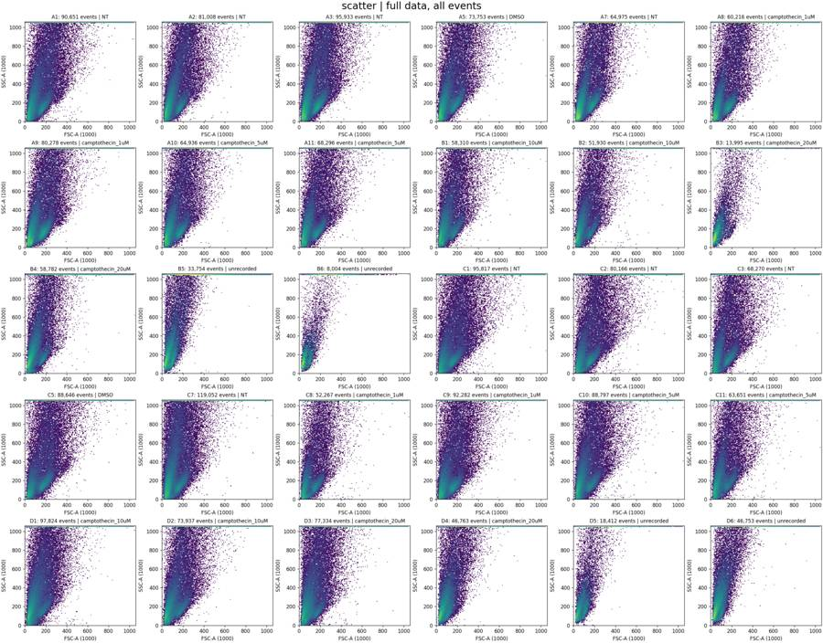
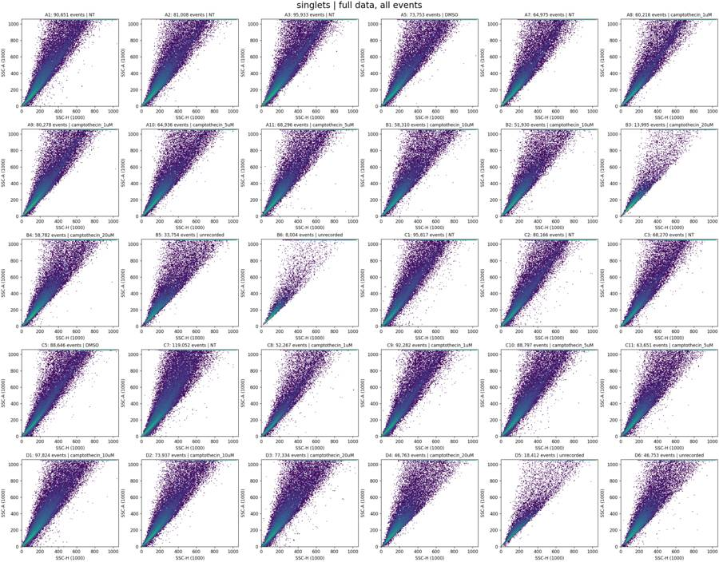
tool call · exec
text(await tools.write_stdin({session_id:30845,chars:"",yield_time_ms:1000,max_output_tokens:2000}));
for(const path of ["/task/outputs/plots/scatter_zoom.png","/task/outputs/plots/controls_initial.png","/task/outputs/plots/rates.png"]){const r=await tools.view_image({path});image(r.image_url);}
tool output
Script completed Wall time 0.1 seconds Output:
{"chunk_id":"36c7a6","wall_time_seconds":0.00000306,"exit_code":0,"original_token_count":12,"output":"saved fluorescence\nsaved rates\nsaved time_ssc\n"}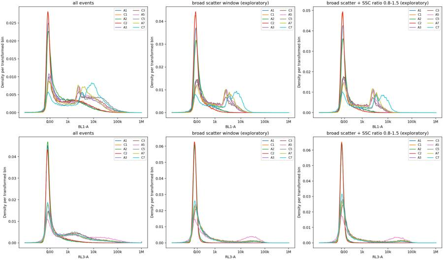
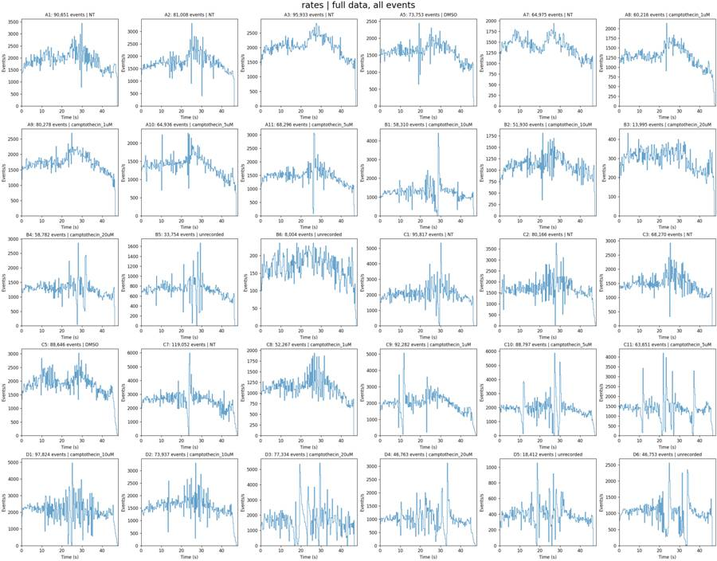
tool call · exec
for(const path of ["/task/outputs/plots/fluorescence.png","/task/outputs/plots/time_ssc.png"]){const r=await tools.view_image({path});image(r.image_url);}
text(await tools.exec_command({cmd:"python - <<'PY'\nimport inspect,flowkit as fk\nfrom flowkit._models.gating_results import GatingResults\nfor name in ['get_gate_count','get_gate_membership','get_gate_relative_percent','get_gate_absolute_percent']:\n print(name,inspect.signature(getattr(GatingResults,name)))\nprint(inspect.getsource(fk.Sample._get_raw_events))\nPY",max_output_tokens:2000}));
tool output
Script completed Wall time 1.0 seconds Output:
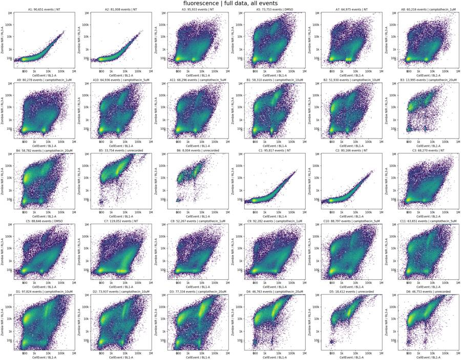
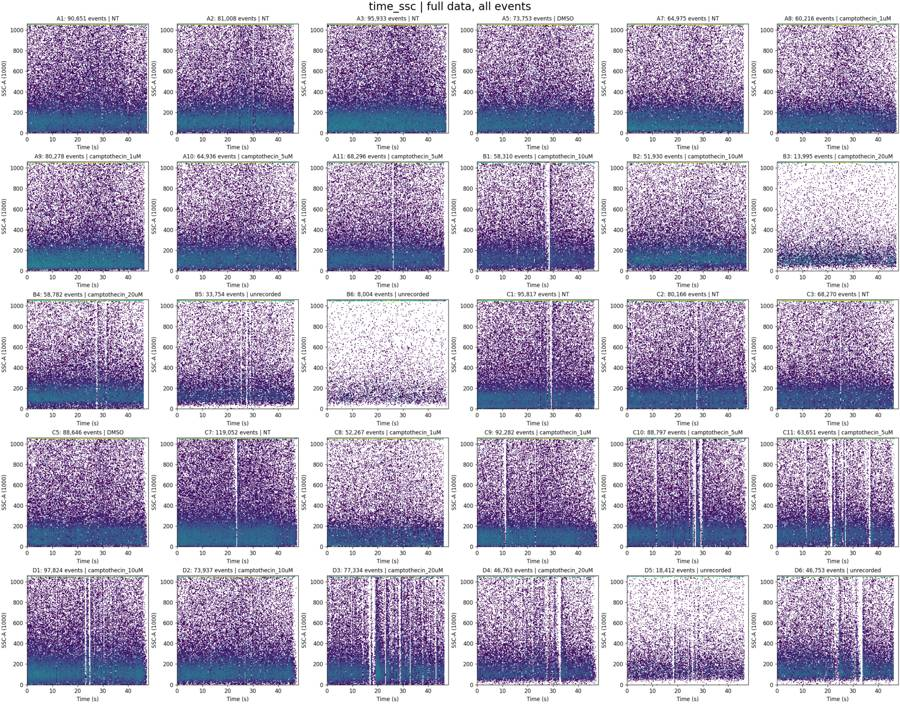
{"chunk_id":"cb52b1","wall_time_seconds":0.760235287,"exit_code":0,"original_token_count":129,"output":"get_gate_count (self, gate_name, gate_path=None)\nget_gate_membership (self, gate_name, gate_path=None)\nget_gate_relative_percent (self, gate_name, gate_path=None)\nget_gate_absolute_percent (self, gate_name, gate_path=None)\n def _get_raw_events(self):\n \"\"\"\n Returns 'raw' events that have been pre-processed to adjust for channel\n gain and lin/log display, but have not been compensated or transformed.\n\n :return: NumPy array of raw events\n \"\"\"\n return self._raw_events\n\n"}tool call · exec
text(await tools.exec_command({cmd:"cat > /task/outputs/analyze_plate.py <<'PY'\n\"\"\"Full-event FlowKit 1.2.3 plate gating and audit; inputs are never modified.\"\"\"\nfrom pathlib import Path\nimport json\nimport flowkit as fk\nimport numpy as np\nimport pandas as pd\nimport matplotlib\nmatplotlib.use('Agg')\nimport matplotlib.pyplot as plt\nfrom matplotlib.colors import LogNorm\nfrom scipy.ndimage import gaussian_filter1d\n\nROOT=Path('/task'); OUT=ROOT/'outputs'; PLOT=OUT/'plots'\nPOPULATIONS=['Cells','Single_Cells','Live','Caspase_pos']\nPARENTS=['all_events','Cells','Single_Cells','Live']\nCELL_CENTER=[190000.,230000.]\nCELL_COV=[[125000.**2, .8*125000.*210000.],[.8*125000.*210000.,210000.**2]]\nSINGLET_VERTICES=[[10000.,9000.],[10000.,15500.],[700000.,1085000.],[700000.,630000.]]\nLIVE_MAX=2000.\nCASPASE_MIN=4000.\n\ndef make_strategy():\n gs=fk.GatingStrategy()\n dim=lambda name,lo=None,hi=None: fk.Dimension(name,compensation_ref='uncompensated',range_min=lo,range_max=hi)\n gs.add_gate(fk.gates.EllipsoidGate('Cells',[dim('FSC-A'),dim('SSC-A')],CELL_CENTER,CELL_COV,1.),('root',))\n gs.add_gate(fk.gates.PolygonGate('Single_Cells',[dim('SSC-H'),dim('SSC-A')],SINGLET_VERTICES),('root','Cells'))\n gs.add_gate(fk.gates.RectangleGate('Live',[dim('RL3-A',hi=LIVE_MAX),dim('SSC-A',lo=20000.,hi=440000.)]),('root','Cells','Single_Cells'))\n gs.add_gate(fk.gates.RectangleGate('Caspase_pos',[dim('BL1-A',lo=CASPASE_MIN),dim('SSC-A',lo=20000.,hi=440000.)]),('root','Cells','Single_Cells','Live'))\n return gs\n\ndef load():\n layout=pd.read_csv(ROOT/'inputs/plate_layout.csv')\n samples={r.well:fk.Sample(str(ROOT/'inputs/raw'/r.file)) for r in layout.itertuples()}\n return layout,samples\n\nT=fk.transforms.LogicleTransform(param_t=1048576,param_w=.5,param_m=4.5,param_a=0)\ndef tx(x):return T.apply(np.asarray(x,dtype=float))\ndef hx(ax,x,y,rng,bins=160):ax.hist2d(x,y,bins=bins,range=rng,norm=LogNorm(vmin=1),cmap='viridis')\ndef fticks(ax,axis='x'):\n ticks=tx([0,100,1000,10000,100000,1000000]);labs=['0','100','1k','10k','100k','1M']\n if axis=='x': ax.set_xticks(ticks,labs)\n else: ax.set_yticks(ticks,labs)\n\ndef ellipse():\n w,v=np.linalg.eigh(np.asarray(CELL_COV));theta=np.linspace(0,2*np.pi,300)\n return np.array(CELL_CENTER)[:,None]+v@np.diag(np.sqrt(w))@np.array([np.cos(theta),np.sin(theta)])\n\ndef main():\n layout,samples=load(); gs=make_strategy()\n with (OUT/'gates.xml').open('wb') as fh:fk.export_gatingml(gs,fh)\n saved=fk.parse_gating_xml(str(OUT/'gates.xml'))\n rows=[]; R={};E={}; metrics=[]; controls=[]\n for row in layout.itertuples():\n s=samples[row.well];a=s.get_events(source='raw');E[row.well]=a\n r=saved.gate_sample(s); original=gs.gate_sample(s)\n R[row.well]={p:r.get_gate_membership(p) for p in POPULATIONS}\n parent=len(a)\n for pop,par in zip(POPULATIONS,PARENTS):\n n=int(r.get_gate_count(pop));assert n==original.get_gate_count(pop)\n assert np.array_equal(r.get_gate_membership(pop),original.get_gate_membership(pop))\n rows.append({'file':row.file,'well':row.well,'population':pop,'count':n,'parent_population':par,'pct_of_parent':100*n/parent if parent else 0.})\n parent=n\n m={'well':row.well,'all_events':len(a)}\n m.update({p:int(R[row.well][p].sum()) for p in POPULATIONS})\n for p in POPULATIONS[:3]:\n q=a[R[row.well][p]]\n for c,j in [('BL1',3),('RL3',4),('SSC_ratio',None)]:\n vals=q[:,j] if j is not None else q[:,2]/np.maximum(q[:,6],1)\n for quant in [50,90,95,99,99.5]:m[f'{p}_{c}_q{quant}']=float(np.percentile(vals,quant)) if len(vals) else None\n metrics.append(m)\n pd.DataFrame(rows).to_csv(OUT/'counts.csv',index=False)\n pd.DataFrame(metrics).to_csv(OUT/'gated_metrics.csv',index=False)\n print(pd.DataFrame(metrics)[['well','all_events']+POPULATIONS].to_string(index=False),flush=True)\n # These provisional gates will be refined after inspection of the full-event control and gate plots.\n for typ in ['cells_gate','singlets_gate','live_gate','caspase_gate']:\n fig,axes=plt.subplots(5,6,figsize=(23,18),layout='constrained')\n for row,ax in zip(layout.itertuples(),axes.flat):\n a=E[row.well];m=R[row.well]\n if typ=='cells_gate':\n hx(ax,a[:,1]/1000,a[:,2]/1000,[[0,500],[0,700]])\n xy=ellipse();ax.plot(xy[0]/1000,xy[1]/1000,'r-',lw=1)\n ax.set(xlabel='FSC-A (1000)',ylabel='SSC-A (1000)');n=m['Cells'].sum();par=len(a)\n elif typ=='singlets_gate':\n q=a[m['Cells']];hx(ax,q[:,6]/1000,q[:,2]/1000,[[0,500],[0,500]])\n vv=np.array(SINGLET_VERTICES+[SINGLET_VERTICES[0]])/1000;ax.plot(vv[:,0],vv[:,1],'r-',lw=1)\n ax.set(xlabel='SSC-H (1000)',ylabel='SSC-A (1000)');n=m['Single_Cells'].sum();par=len(q)\n elif typ=='live_gate':\n q=a[m['Single_Cells']];hx(ax,tx(q[:,4]),q[:,2]/1000,[[-.05,1.01],[0,500]])\n ax.axvline(tx([LIVE_MAX])[0],color='r',lw=1);fticks(ax);ax.set(xlabel='Zombie NIR / RL3-A',ylabel='SSC-A (1000)');n=m['Live'].sum();par=len(q)\n else:\n q=a[m['Live']];hx(ax,tx(q[:,3]),q[:,2]/1000,[[-.05,1.01],[0,500]])\n ax.axvline(tx([CASPASE_MIN])[0],color='r',lw=1);fticks(ax);ax.set(xlabel='CellEvent / BL1-A',ylabel='SSC-A (1000)');n=m['Caspase_pos'].sum();par=len(q)\n ax.set_title(f'{row.well}: {n:,}/{par:,} = {100*n/par if par else 0:.1f}%',fontsize=10)\n fig.suptitle(typ+' | full parent population',fontsize=20)\n fig.savefig(PLOT/(typ+'.png'),dpi=120);plt.close(fig);print('saved',typ,flush=True)\n\n fig,axes=plt.subplots(2,2,figsize=(14,10),layout='constrained')\n for well in ['A1','C1','A2','C2','A3','C3','A5','C5','A7','C7']:\n a=E[well];m=R[well]\n for j,c in enumerate([3,4]):\n for k,p in enumerate(['Single_Cells','Live']):\n vals=tx(a[m[p],c]);h,b=np.histogram(vals,bins=np.linspace(-.1,1,400));h=gaussian_filter1d(h.astype(float),1)\n axes[j,k].plot((b[1:]+b[:-1])/2,h/h.sum(),label=well)\n axes[j,k].set_title(p);axes[j,k].set_xlabel(['BL1-A (CellEvent)','RL3-A (Zombie NIR)'][j]);fticks(axes[j,k])\n for ax in axes.flat:ax.legend(ncol=2,fontsize=8)\n axes[0,1].axvline(tx([CASPASE_MIN])[0],
… [260 more characters not shown]tool output
Script completed
Wall time 1.2 seconds
Output:
{"chunk_id":"067071","wall_time_seconds":1.001292507,"session_id":53955,"original_token_count":0,"output":""}13
agent
The plots show a consistent cell cloud below the clipped scatter events, so I’ve saved an initial shared gate set and counts. Several wells also have brief flow interruptions. I’ll quantify those disruptions and check the controls after cell and singlet gating.
tool call · exec
text(await tools.write_stdin({session_id:53955,chars:"",yield_time_ms:1000,max_output_tokens:2500}));
text(await tools.clock__curr_time({}));
text(await tools.exec_command({cmd:"python - <<'PY'\nimport pandas as pd\np='/task/outputs/gated_metrics.csv'\ndf=pd.read_csv(p)\nprint(df[df.well.isin(['A1','C1','A2','C2','A3','C3','A5','C5','A7','C7'])][['well','Single_Cells','Live','Caspase_pos','Single_Cells_RL3_q50','Single_Cells_RL3_q95','Single_Cells_RL3_q99','Live_BL1_q95','Live_BL1_q99','Live_BL1_q99.5','Cells_SSC_ratio_q50','Cells_SSC_ratio_q95']].to_string(index=False))\nPY",max_output_tokens:2500}));
tool output
Script completed
Wall time 4.7 seconds
Output:
{"chunk_id":"6f99a8","wall_time_seconds":4.380964534,"exit_code":0,"original_token_count":460,"output":"well all_events Cells Single_Cells Live Caspase_pos\n A1 90651 15538 13960 13959 13\n A2 81008 12121 10847 10847 11\n A3 95933 18197 16842 16258 1145\n A5 73753 12393 11320 9719 713\n A7 64975 11507 10675 10304 1158\n A8 60216 11365 10715 10204 1130\n A9 80278 17453 16400 15374 3026\n A10 64936 12120 11167 9330 636\n A11 68296 12161 11186 10059 876\n B1 58310 9527 8638 6511 509\n B2 51930 7406 6728 5349 251\n B3 13995 1959 1727 706 71\n B4 58782 7480 6835 5237 380\n B5 33754 3902 3204 89 6\n B6 8004 1206 1064 99 7\n C1 95817 18527 16263 16261 0\n C2 80166 15357 13784 13784 0\n C3 68270 11521 10630 10220 700\n C5 88646 16801 15355 14764 1067\n C7 119052 17071 15055 14651 2606\n C8 52267 9013 8307 7888 820\n C9 92282 17035 15309 14694 2356\n C10 88797 13421 11994 10530 1107\n C11 63651 10076 9066 7138 891\n D1 97824 13308 11389 8036 1130\n D2 73937 12520 11302 8044 1398\n D3 77334 12195 10488 6502 1201\n D4 46763 5974 4929 735 70\n D5 18412 2661 2300 32 4\n D6 46753 3500 3037 252 15\nsaved cells_gate\nsaved singlets_gate\nsaved live_gate\nsaved caspase_gate\n"}
{"current_time":"2026-11-10 17:11:15 UTC"}
{"chunk_id":"d143a0","wall_time_seconds":0.107551894,"exit_code":0,"original_token_count":523,"output":"well Single_Cells Live Caspase_pos Single_Cells_RL3_q50 Single_Cells_RL3_q95 Single_Cells_RL3_q99 Live_BL1_q95 Live_BL1_q99 Live_BL1_q99.5 Cells_SSC_ratio_q50 Cells_SSC_ratio_q95\n A1 13960 13959 13 9.0 106.00 206.00 402.00 1483.46 2123.26 1.189449 1.655727\n A2 10847 10847 11 9.0 106.00 188.54 435.00 1463.70 1999.71 1.204392 1.685339\n A3 16842 16258 1145 70.0 1341.75 6033.54 4759.15 7615.46 9478.15 1.193574 1.581618\n A5 11320 9719 713 84.0 24615.25 44074.05 5017.50 8413.40 9822.73 1.200826 1.644094\n A7 10675 10304 1158 78.0 1391.40 7649.16 5662.70 9268.85 10890.04 1.208982 1.599151\n C1 16263 16261 0 4.0 93.00 141.00 238.00 578.00 776.40 1.180984 1.669761\n C2 13784 13784 0 4.0 94.00 139.00 207.00 537.00 738.51 1.184401 1.636783\n C3 10630 10220 700 94.0 1507.10 7970.23 4900.00 8766.00 10647.67 1.188450 1.564439\n C5 15355 14764 1067 69.0 980.00 28302.04 4880.40 9303.48 11071.84 1.183337 1.572415\n C7 15055 14651 2606 69.0 989.30 7109.36 8239.00 13679.50 15778.75 1.174942 1.642831\n"}tool call · exec
for(const path of ["/task/outputs/plots/cells_gate.png","/task/outputs/plots/singlets_gate.png","/task/outputs/plots/controls_gated.png"]){const r=await tools.view_image({path});image(r.image_url);}
tool output
Script completed Wall time 0.1 seconds Output:
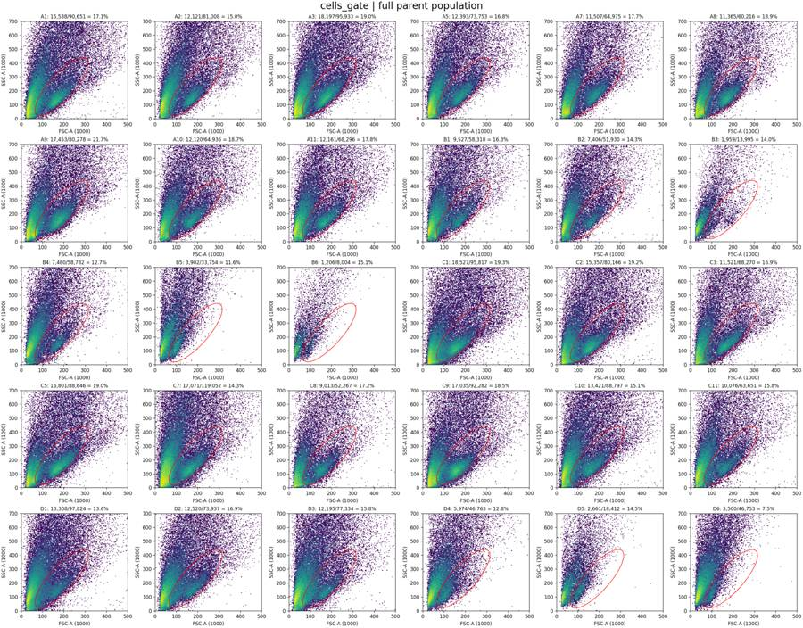
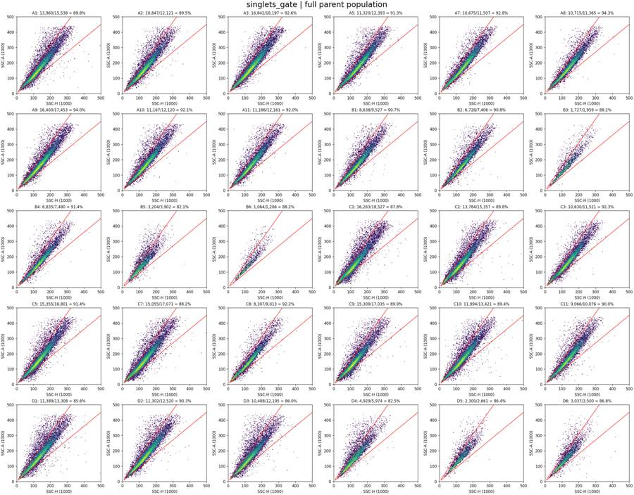
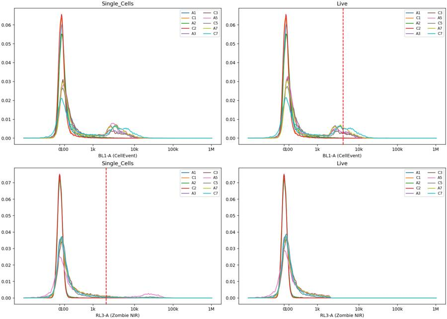
tool call · exec
text(await tools.exec_command({cmd:"python - <<'PY'\nimport sys\nsys.path.insert(0,'/task/outputs')\nfrom analyze_plate import *\nlayout,samples=load();gs=fk.parse_gating_xml('/task/outputs/gates.xml')\nfor w in ['A1','A2','A3','A5','C1','C2','C3','C5']:\n s=samples[w];a=s.get_events(source='raw');r=gs.gate_sample(s);ss=r.get_gate_membership('Single_Cells');lv=r.get_gate_membership('Live')\n print(w,'n',ss.sum(),'BL1 p99,99.5,99.9 live',np.percentile(a[lv,3],[99,99.5,99.9]).round(1),'RL3 percent > [200,500,1000,2000,5000,10000] ss',[(a[ss,4]>x).mean().round(4) for x in [200,500,1000,2000,5000,10000]])\n print('RL3 vs BL1 [BL1 <100;100-1000;>1000], RL3 median and 95%',[(int(((a[:,3]>=l)&(a[:,3]<h)&ss).sum()),np.percentile(a[(a[:,3]>=l)&(a[:,3]<h)&ss,4],[50,95]).round(1)) for l,h in [(-1e10,100),(100,1000),(1000,1e10)]])\nPY",max_output_tokens:4000}));
tool output
Script completed
Wall time 1.5 seconds
Output:
{"chunk_id":"d51b32","wall_time_seconds":1.311484647,"exit_code":0,"original_token_count":603,"output":"A1 n 13960 BL1 p99,99.5,99.9 live [1483.5 2123.3 3789.5] RL3 percent > [200,500,1000,2000,5000,10000] ss [0.0107, 0.0011, 0.0001, 0.0001, 0.0001, 0.0001]\nRL3 vs BL1 [BL1 <100;100-1000;>1000], RL3 median and 95% [(9863, array([ 4., 87.])), (3844, array([ 18., 116.])), (253, array([211., 501.]))]\nA2 n 10847 BL1 p99,99.5,99.9 live [1463.7 1999.7 3820.3] RL3 percent > [200,500,1000,2000,5000,10000] ss [0.0091, 0.0012, 0.0001, 0.0, 0.0, 0.0]\nRL3 vs BL1 [BL1 <100;100-1000;>1000], RL3 median and 95% [(7148, array([ 4., 87.])), (3496, array([ 17.5, 111. ])), (203, array([187. , 549.5]))]\nA3 n 16842 BL1 p99,99.5,99.9 live [ 7615.5 9478.2 16189. ] RL3 percent > [200,500,1000,2000,5000,10000] ss [0.2648, 0.1278, 0.0678, 0.0347, 0.0125, 0.0065]\nRL3 vs BL1 [BL1 <100;100-1000;>1000], RL3 median and 95% [(6122, array([ 31. , 449.9])), (6707, array([ 136. , 2240.9])), (4013, array([ 58. , 1760.6]))]\nA5 n 11320 BL1 p99,99.5,99.9 live [ 8413.4 9822.7 13824. ] RL3 percent > [200,500,1000,2000,5000,10000] ss [0.3527, 0.2328, 0.1769, 0.1414, 0.117, 0.1013]\nRL3 vs BL1 [BL1 <100;100-1000;>1000], RL3 median and 95% [(3558, array([ -1., 489.])), (4327, array([ 132. , 3258.8])), (3435, array([ 240. , 39366.6]))]\nC1 n 16263 BL1 p99,99.5,99.9 live [ 578. 776.4 1285.7] RL3 percent > [200,500,1000,2000,5000,10000] ss [0.0017, 0.0002, 0.0001, 0.0001, 0.0001, 0.0001]\nRL3 vs BL1 [BL1 <100;100-1000;>1000], RL3 median and 95% [(13063, array([ 1., 84.])), (3161, array([ 17., 120.])), (39, array([190. , 492.2]))]\nC2 n 13784 BL1 p99,99.5,99.9 live [ 537. 738.5 1473. ] RL3 percent > [200,500,1000,2000,5000,10000] ss [0.0021, 0.0001, 0.0, 0.0, 0.0, 0.0]\nRL3 vs BL1 [BL1 <100;100-1000;>1000], RL3 median and 95% [(11152, array([ 1. , 87.4])), (2595, array([ 16., 111.])), (37, array([231., 407.]))]\nC3 n 10630 BL1 p99,99.5,99.9 live [ 8766. 10647.7 14944.5] RL3 percent > [200,500,1000,2000,5000,10000] ss [0.304, 0.1426, 0.0768, 0.0386, 0.0151, 0.0083]\nRL3 vs BL1 [BL1 <100;100-1000;>1000], RL3 median and 95% [(3802, array([ 42., 484.])), (4685, array([ 164. , 2202.8])), (2143, array([ 89. , 2516.8]))]\nC5 n 15355 BL1 p99,99.5,99.9 live [ 9303.5 11071.8 15970.9] RL3 percent > [200,500,1000,2000,5000,10000] ss [0.201, 0.0782, 0.0498, 0.0385, 0.0307, 0.026]\nRL3 vs BL1 [BL1 <100;100-1000;>1000], RL3 median and 95% [(5531, array([ 25., 253.])), (6208, array([114. , 677.6])), (3616, array([ 78. , 24490.5]))]\n"}tool call · exec
text(await tools.exec_command({cmd:"cat > /task/outputs/inspect_flow.py <<'PY'\nfrom pathlib import Path\nimport sys\nsys.path.insert(0,str(Path(__file__).parent))\nfrom analyze_plate import *\nfrom scipy.ndimage import median_filter\n\ndef intervals(mask, edges,join=0.):\n idx=np.flatnonzero(mask)\n if len(idx)==0:return []\n out=[];start=edges[idx[0]];stop=edges[idx[0]+1]\n for i in idx[1:]:\n if edges[i]-stop <=join+1e-8:stop=edges[i+1]\n else:out.append((float(start),float(stop)));start=edges[i];stop=edges[i+1]\n out.append((float(start),float(stop)));return out\n\nlayout,samples=load();gs=fk.parse_gating_xml(str(OUT/'gates.xml'))\nallrows=[];summary=[];detailed={}\nfor row in layout.itertuples():\n s=samples[row.well];a=s.get_events(source='raw');t=a[:,0];r=gs.gate_sample(s);m={p:r.get_gate_membership(p) for p in POPULATIONS}\n edges=np.arange(0,48.0001,.1);mid=(edges[1:]+edges[:-1])/2;h=np.histogram(t,edges)[0];base=median_filter(h.astype(float),size=31,mode='nearest')\n valid=(mid>=1)&(mid<t.max()-1);low=(h<.25*base)&valid;high=(h>2.5*base)&valid\n dt=np.diff(t); topidx=np.argsort(dt)[-5:][::-1]\n z={'well':row.well,'N':len(a),'tmax':t.max(),'live':int(m['Live'].sum()),'median_rate':np.median(h[valid])/.1,'low_sec':low.sum()*.1,'high_sec':high.sum()*.1,'max_gap_s':dt.max(),'gap_time':t[np.argmax(dt)],'low_intervals':intervals(low,edges),'high_intervals':intervals(high,edges),'lowhigh_clusters':intervals(low|high,edges,.5),'max_rate_100ms':max(h[valid])/.1,'min_rate_100ms':min(h[valid])/.1}\n detailed[row.well]=z\n summary.append({k:v for k,v in z.items() if not isinstance(v,list)})\n print(f\"{row.well:3s} rate={z['median_rate']:5.0f}/s low={z['low_sec']:.1f}s hi={z['high_sec']:.1f}s maxgap={z['max_gap_s']:.3f}s at {z['gap_time']:.3f} | low {z['low_intervals']} high {z['high_intervals']}\",flush=True)\n for i in range(len(mid)):\n sel=(t>=edges[i])&(t<edges[i+1]);q=a[sel]\n d={'well':row.well,'start_s':edges[i],'end_s':edges[i+1],'N':len(q),'expected_N':base[i],'rate_ratio':h[i]/base[i] if base[i] else np.nan,'low':bool(low[i]),'high':bool(high[i])}\n if len(q):\n for c,j in [('FSC_A',1),('SSC_A',2),('BL1_A',3),('RL3_A',4)]:d[c+'_median']=np.median(q[:,j]);d[c+'_saturated_pct']=100*(q[:,j]>=1048575).mean()\n for p in POPULATIONS:d[p]=int((m[p]&sel).sum())\n allrows.append(d)\npd.DataFrame(summary).to_csv(OUT/'flow_summary.csv',index=False)\npd.DataFrame(allrows).to_csv(OUT/'time_bins_100ms.csv',index=False)\n(OUT/'flow_intervals.json').write_text(json.dumps(detailed,indent=2))\n\nfor group,well_list in [('controls',['A1','A2','A3','A5','A7','C1','C2','C3','C5','C7']),('wt_treated',['A8','A9','A10','A11','B1','B2','B3','B4','B5','B6']),('ko_treated',['C8','C9','C10','C11','D1','D2','D3','D4','D5','D6'])]:\n fig,axes=plt.subplots(10,4,figsize=(21,30),layout='constrained')\n for w,axs in zip(well_list,axes):\n df=pd.DataFrame(allrows);df=df[df.well==w];a=samples[w].get_events(source='raw');t=a[:,0]\n x=(df.start_s+df.end_s)/2\n axs[0].step(x,df.N*10,where='mid',color='#34495e',lw=.7);axs[0].plot(x,df.expected_N*10,color='orange',lw=.8)\n for aa,bb in detailed[w]['low_intervals']:axs[0].axvspan(aa,bb,color='red',alpha=.3)\n axs[0].set(ylabel=f'{w}\\nEvents/s',xlim=(0,48));axs[0].set_ylim(bottom=0)\n edges=np.arange(0,48.001,.5);mid=(edges[1:]+edges[:-1])/2;g=gs.gate_sample(samples[w]);m={p:g.get_gate_membership(p) for p in POPULATIONS}\n allh=np.histogram(t,edges)[0]\n for p,col in [('Cells','#2980b9'),('Live','#27ae60')]:\n nh=np.histogram(t[m[p]],edges)[0];axs[1].plot(mid,100*nh/np.maximum(allh,1),label=p,color=col,lw=.8)\n axs[1].set(ylabel='% all events',xlim=(0,48),ylim=(0,60))\n axs[2].plot(x,df.FSC_A_median/1000,label='FSC-A',lw=.6);axs[2].plot(x,df.SSC_A_median/1000,label='SSC-A',lw=.6)\n axs[2].set(ylabel='Median (1000)',xlim=(0,48),ylim=(0,1100))\n hx(axs[3],t,tx(a[:,4]),[[0,48],[-.1,1.01]],bins=(240,130));fticks(axs[3],axis='y');axs[3].set(ylabel='RL3-A',xlim=(0,48))\n for ax in axs:ax.set_xlabel('Time (s)')\n if w==well_list[0]:axs[1].legend();axs[2].legend()\n fig.suptitle(group+' | acquisition QC, all events; 0.1-s rate bins, 0.5-s population fractions',fontsize=16)\n fig.savefig(PLOT/f'time_detail_{group}.png',dpi=110);plt.close(fig)\nPY\npython /task/outputs/inspect_flow.py",yield_time_ms:1000,max_output_tokens:5000}));
tool output
Script completed
Wall time 1.2 seconds
Output:
{"chunk_id":"218b9f","wall_time_seconds":1.001291217,"session_id":82301,"original_token_count":0,"output":""}tool call · exec
text(await tools.write_stdin({session_id:82301,chars:"",yield_time_ms:1000,max_output_tokens:5000}));
text(await tools.exec_command({cmd:"python - <<'PY'\nfrom pathlib import Path\nimport pandas as pd,flowkit as fk,json\nrows=[]\nfor r in pd.read_csv('/task/inputs/plate_layout.csv').itertuples():\n s=fk.Sample('/task/inputs/raw/'+r.file)\n z={k:s.metadata.get(k) for k in ['wellid','tot','vol','#flowrate','#coincidentcount','lost','btim','etim','timestep']}\n z['well']=r.well;z['v']=';'.join(s.metadata.get(f'p{i}v','') for i in range(1,10));rows.append(z)\nprint(pd.DataFrame(rows).to_string(index=False))\nPY",max_output_tokens:3000}));
tool output
Script completed
Wall time 1.1 seconds
Output:
{"chunk_id":"7e8e0f","wall_time_seconds":0.00000285,"exit_code":0,"original_token_count":2164,"output":"A1 rate= 1870/s low=0.3s hi=0.0s maxgap=0.088s at 29.579 | low [(27.200000000000003, 27.3), (29.5, 29.700000000000003)] high []\nA2 rate= 1690/s low=0.8s hi=0.0s maxgap=0.081s at 15.382 | low [(14.100000000000001, 14.200000000000001), (15.3, 15.4), (19.5, 19.6), (24.8, 24.900000000000002), (30.1, 30.3), (34.300000000000004, 34.4), (35.9, 36.0)] high []\nA3 rate= 2040/s low=0.1s hi=0.0s maxgap=0.023s at 44.922 | low [(26.3, 26.400000000000002)] high []\nA5 rate= 1610/s low=0.4s hi=0.0s maxgap=0.073s at 26.996 | low [(19.0, 19.1), (24.8, 24.900000000000002), (27.0, 27.1), (27.3, 27.400000000000002)] high []\nA7 rate= 1410/s low=0.0s hi=0.0s maxgap=0.016s at 13.365 | low [] high []\nA8 rate= 1290/s low=0.1s hi=0.0s maxgap=0.031s at 36.945 | low [(23.400000000000002, 23.5)] high []\nA9 rate= 1725/s low=0.1s hi=0.0s maxgap=0.045s at 16.950 | low [(14.600000000000001, 14.700000000000001)] high []\nA10 rate= 1390/s low=0.4s hi=0.0s maxgap=0.108s at 23.682 | low [(10.100000000000001, 10.200000000000001), (23.1, 23.200000000000003), (23.6, 23.8)] high []\nA11 rate= 1460/s low=0.6s hi=0.0s maxgap=0.182s at 25.961 | low [(25.8, 26.3), (31.400000000000002, 31.5)] high []\nB1 rate= 1250/s low=1.8s hi=0.7s maxgap=0.485s at 28.314 | low [(15.8, 16.1), (18.3, 18.400000000000002), (20.700000000000003, 20.8), (21.200000000000003, 21.3), (22.6, 22.700000000000003), (23.200000000000003, 23.3), (25.400000000000002, 25.6), (27.0, 27.1), (28.200000000000003, 28.8), (38.400000000000006, 38.5)] high [(26.700000000000003, 26.900000000000002), (27.3, 27.400000000000002), (28.8, 29.1), (29.200000000000003, 29.3)]\nB2 rate= 1100/s low=0.9s hi=0.1s maxgap=0.128s at 22.482 | low [(13.600000000000001, 13.700000000000001), (21.1, 21.200000000000003), (22.1, 22.200000000000003), (22.400000000000002, 22.6), (22.8, 22.900000000000002), (24.8, 24.900000000000002), (25.8, 25.900000000000002), (27.200000000000003, 27.3)] high [(22.6, 22.700000000000003)]\nB3 rate= 305/s low=0.0s hi=0.0s maxgap=0.072s at 19.537 | low [] high []\nB4 rate= 1260/s low=1.1s hi=0.3s maxgap=0.249s at 27.665 | low [(20.200000000000003, 20.3), (24.0, 24.1), (27.5, 27.900000000000002), (28.5, 28.6), (30.400000000000002, 30.5), (31.1, 31.400000000000002)] high [(27.900000000000002, 28.1), (31.8, 31.900000000000002)]\nB5 rate= 720/s low=0.9s hi=0.0s maxgap=0.317s at 27.534 | low [(24.200000000000003, 24.3), (25.200000000000003, 25.5), (27.5, 27.8), (28.8, 28.900000000000002), (29.1, 29.200000000000003)] high []\nB6 rate= 170/s low=0.0s hi=0.0s maxgap=0.101s at 47.023 | low [] high []\nC1 rate= 1990/s low=2.2s hi=0.1s maxgap=0.243s at 29.275 | low [(14.3, 14.4), (19.8, 19.900000000000002), (22.400000000000002, 22.5), (24.3, 24.400000000000002), (24.900000000000002, 25.1), (26.3, 26.400000000000002), (26.6, 26.700000000000003), (27.3, 27.400000000000002), (27.8, 27.900000000000002), (28.0, 28.1), (28.8, 28.900000000000002), (29.0, 29.5), (30.700000000000003, 30.8), (31.5, 31.6), (32.7, 32.800000000000004), (33.9, 34.0), (38.5, 38.6)] high [(30.1, 30.200000000000003)]\nC2 rate= 1640/s low=1.7s hi=0.2s maxgap=0.257s at 27.583 | low [(14.4, 14.5), (18.5, 18.6), (23.1, 23.200000000000003), (24.400000000000002, 24.5), (24.900000000000002, 25.0), (25.6, 25.700000000000003), (26.5, 26.6), (27.1, 27.200000000000003), (27.5, 27.8), (29.1, 29.200000000000003), (29.400000000000002, 29.5), (31.0, 31.1), (31.3, 31.5), (32.300000000000004, 32.4)] high [(26.900000000000002, 27.0), (28.0, 28.1)]\nC3 rate= 1440/s low=0.5s hi=0.0s maxgap=0.112s at 25.040 | low [(15.200000000000001, 15.3), (25.1, 25.200000000000003), (32.4, 32.5), (34.800000000000004, 34.9), (36.2, 36.300000000000004)] high []\nC5 rate= 1860/s low=0.7s hi=0.0s maxgap=0.048s at 16.725 | low [(9.5, 9.600000000000001), (14.700000000000001, 14.8), (25.700000000000003, 25.900000000000002), (26.700000000000003, 26.8), (28.1, 28.200000000000003), (32.5, 32.6)] high []\nC7 rate= 2580/s low=1.2s hi=0.3s maxgap=0.104s at 23.579 | low [(10.8, 10.9), (12.3, 12.4), (23.400000000000002, 23.8), (24.400000000000002, 24.5), (25.0, 25.1), (26.200000000000003, 26.3), (40.400000000000006, 40.5), (40.800000000000004, 40.900000000000006), (43.6, 43.7)] high [(23.900000000000002, 24.1), (24.200000000000003, 24.3)]\nC8 rate= 1110/s low=0.9s hi=0.0s maxgap=0.077s at 17.004 | low [(12.9, 13.0), (17.0, 17.1), (24.5, 24.6), (26.400000000000002, 26.5), (29.5, 29.700000000000003), (31.1, 31.200000000000003), (31.400000000000002, 31.5), (34.300000000000004, 34.4)] high []\nC9 rate= 1930/s low=1.7s hi=0.4s maxgap=0.140s at 23.129 | low [(10.9, 11.600000000000001), (13.9, 14.0), (14.3, 14.4), (16.3, 16.400000000000002), (21.700000000000003, 21.900000000000002), (23.0, 23.200000000000003), (24.0, 24.1), (25.700000000000003, 25.8), (39.300000000000004, 39.400000000000006)] high [(9.3, 9.4), (11.600000000000001, 11.9)]\nC10 rate= 1840/s low=2.6s hi=1.3s maxgap=0.334s at 26.764 | low [(11.4, 11.8), (18.3, 18.400000000000002), (19.3, 19.400000000000002), (21.200000000000003, 21.3), (22.6, 22.700000000000003), (24.6, 24.900000000000002), (26.0, 26.200000000000003), (26.5, 27.200000000000003), (28.900000000000002, 29.200000000000003), (29.3, 29.6)] high [(11.9, 12.0), (25.0, 25.1), (27.3, 27.700000000000003), (27.8, 28.1), (29.700000000000003, 29.900000000000002), (30.0, 30.200000000000003)]\nC11 rate= 1360/s low=3.2s hi=1.0s maxgap=0.359s at 21.153 | low [(11.3, 11.700000000000001), (13.100000000000001, 13.200000000000001), (15.9, 16.0), (21.0, 21.700000000000003), (22.700000000000003, 23.1), (25.6, 25.8), (25.900000000000002, 26.1), (27.0, 27.3), (28.8, 28.900000000000002), (35.9, 36.0), (36.300000000000004, 36.800000000000004), (36.9, 37.0)] high [(11.8, 12.0), (21.700000000000003, 22.1), (23.3, 23.400000000000002), (26.3, 26.400000000000002), (37.1, 37.300000000000004)]\n
… [6,605 more characters not shown]tool call · exec
for(const path of ["/task/outputs/plots/time_detail_wt_treated.png","/task/outputs/plots/time_detail_ko_treated.png"]){const r=await tools.view_image({path});image(r.image_url);}
tool output
Script completed Wall time 0.1 seconds Output:
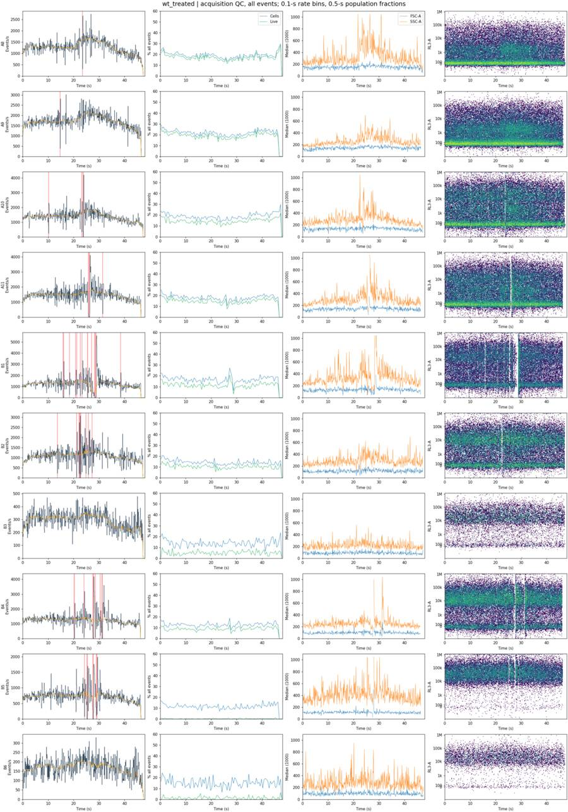
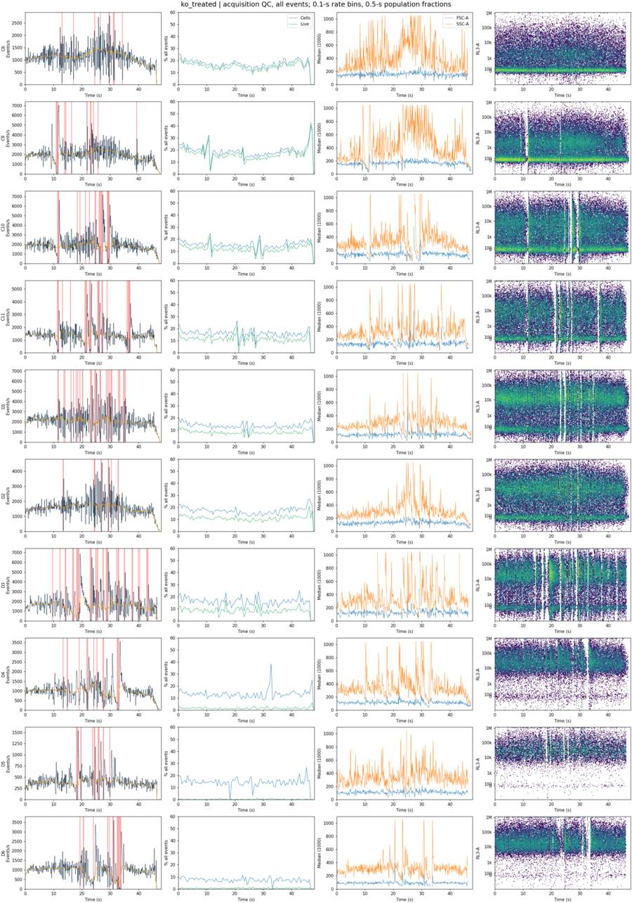
19
agent
The main QC concerns are now clearer: several acquisitions have repeated rate collapses and recovery bursts, and a few wells have very few Live events left. The nominal Zombie-only controls also closely match unstained controls. I’ll separate those observations from biological cell loss and record well-specific evidence and confidence in the flags.
tool call · exec
text(await tools.web__run({search_query:[{q:'site.biolegend.com Zombie NIR fixable viability kit excitation emission unstained control live dead staining controls'},{q:'site.thermofisher.com CellEvent Caspase 3/7 Green flow cytometry 502 530 control fluorescence'}],response_length:"long"}));
text(await tools.exec_command({cmd:"python - <<'PY'\nfrom PIL import Image\np=Image.open('/task/outputs/plots/time_detail_controls.png')\np.save('/task/outputs/plots/time_detail_controls.png')\nprint(p.size)\nPY",max_output_tokens:500}));
const r=await tools.view_image({path:"/task/outputs/plots/time_detail_controls.png"});image(r.image_url);
tool output
Script completed Wall time 1.5 seconds Output:
USER GUIDE CellEvent™ Caspase‑3/7 Detection Reagen (https://www.thermofisher.com/TFS-Assets/LSG/manuals/MAN0028521-CellEventCaspase3-7DetectionReagent-UG.pdf) citeturn1search12 [wordlim: 200] Published: 1.4 years ago; CellEvent™ Caspase-3/7 Green ... and emits optimally at 502 nm and 530 nm, respectively (see ... Figure 2 CellEvent™ Caspase-3/7 Green Detection CellEvent™ Caspase-3/7 Green CellEvent™ Caspase-3/7 Green Figure 4 Specificity of CellEvent™ Caspase‑3/7 Detection Reagents (green/red) Spectral properties • CellEvent ™ Caspase-3/7 Green Detection Reagent absorbs and emits optimally at 502 nm and 530 nm, respectively (see Figure 2). Fluorescence can be visualized with a standard FITC or GFP filter. A673 cells were seeded at 2,000 cells per well, then treated with DMSO/PBS control, 2‑µM camptothecin, or 2‑µM camptothecin plus 10‑µM caspase‑3/7 inhibitor (FMK) for 24 hours at 37°C. Cells were then stained with CellEvent ™ Caspase-3/7 Green Detection Reagent from a DMSO stock solution, or lyophilized CellEvent ™ Caspase‑3/7 Detection Reagent (green or red) formulated in PBS. Following a 1‑hour incubation at 37°C, cells were analyzed using the CellInsight ™ CX5 High Content Screening Platform. 0.5 Excitation Emission Intensity CellEvent™ Caspase-3/7 0.4 CellEvent™ Caspase-3/7 Green Detection Reagent Red Detection Reagent -------------------------------------------------------------------------------- CellEvent Caspase-3/7 Green Flow Cytometry Assay Kit User Guide (Pub.No. MAN0007522 B.0) (https://documents.thermofisher.com/TFS-Assets/LSG/manuals/cellevent_caspase_3_7_grn_flow_cytometry_assay_kit_man.pdf) citeturn1search13 [wordlim: 200] Published: 4.3 years ago; **Stain cells with CellEvent™ Caspase-3/7 Green Flow Cytometry Assay Kit (continued)** ... ** Analyze the samples without washing or fixing, using 488-nm excitation and collecting fluorescence emission using a 530/30 bandpass filter or equivalent for CellEvent™ Caspase-3/7 Green Detection Reagent and a 690/50 bandpass filter or equivalent for SYTOX™ AADvanced™ Dead Cell Stain. We recommend that you prepare and acquire single stained compensation controls using the CellEvent™ Caspase-3/7 Green Detection Reagent and the SYTOX™ AADvanced™ Dead Cell Stain. **1.5.** Add 1 µL of CellEvent™ Caspase-3/7 Green Detection Reagent to 1 mL of sample and mix gently. Incubate the samples for 30 minutes at 37°C or 45–60 minutes at room temperature, protected from light. The final concentration of the reagent is 500 nM. **Note:** For other cell types and models, stain concentration and labeling duration may require adjustment. For optimization, we recommend testing final concentrations between 400–1,000 nM. **1.6.** During the final 5 minutes of staining, add 1 µL of the 1 mM SYTOX™ AADvanced™ Dead Cell Stain in DMSO to the appropriate samples and mix gently. The final labeling concentration of stain is 1 µM. **1.7.** Analyze the samples without washing or fixing, using 488-nm excitation and collecting fluorescence emission using a 530/30 bandpass filter or equivalent for CellEvent™ Caspase-3/7 Green Detection Reagent and a 690/50 bandpass filter or equivalent for SYTOX™ AADvanced™ Dead Cell Stain. -------------------------------------------------------------------------------- invitrogen USER GUIDE (https://documents.thermofisher.com/TFS-Assets/LSG/manuals/MAN0003556_CellEvent_Caspase_3_7_Green_Dctn_Rgnt_UG.pdf) citeturn1search14 [wordlim: 200] Published: 9.8 years ago; Crawled: 9.7 years ago; After activation of caspase-3 or caspase-7 in apoptotic cells, the DEVD peptide is cleaved, enabling the dye to bind to DNA and produce a bright, fluorogenic response with an absorption/emission maxima of ~502/530 nm (Figure 1, page 2). ... In addition to traditional fluorescence microscopy, the CellEvent™ Caspase-3/7 Green Detection Reagent has been validated for high-content imaging and analysis. After activation of caspase-3 or caspase-7 in apoptotic cells, the DEVD peptide is cleaved, enabling the dye to bind to DNA and produce a bright, fluorogenic response with an absorption/emission maxima of ~502/530 nm (Figure 1, page 2). There are several benefits of the CellEvent™ Caspase-3/7 Green Detection Reagent compared to other methods of detecting activated caspase 3/7. One important advantage of this assay is that it does not require wash steps, which helps preserve the fragile apoptotic cells typically lost during wash steps. To use the CellEvent™ Caspase-3/7 Green Detection Reagent, add the substrate to your cells in complete growth medium or buffer, incubate for 30 minutes, and image (Figure 2, page 2). Apoptotic cells with activated caspase-3/7 show bright green nuclei, while cells without activated caspase 3/7 exhibit minimal fluorescence signal (Figure 3, page 2). This robust assay is highly specific for caspase-3/7 activation (Figure 4, page 2) and can be used to monitor caspase-3 or -7 activation with live-cell fluorescence imaging. Because the cleaved reagent labels nuclei of caspase 3/7-positive cells, this stain can also provide information on nuclear morphology, including condensed nuclei typical of late-stage apoptosis. Additionally, the fluorescent signal from CellEvent™ Caspase-3/7 Detection Reagent survives formaldehyde fixation and detergent permeabilization. This provides flexibility in assay workflow and extends the multiplexibility of this probe for the detection other proteins of interest using immunocytochemistry. In addition to traditional fluorescence microscopy, the CellEvent™ Caspase-3/7 Green Detection Reagent has been validated for high-content imaging and analysis. The drastic change in fluorescence between normal and apoptotic cells within a population provides an excellent assay window, and the z-factor value indicates the reagent is robust enough for use in high-content imaging assays (Figure 5, page 2). For Research Use Only. Not for use in diagnostic procedures. Thermo Fisher Scie … [25,007 more characters not shown]
{"chunk_id":"dd8102","wall_time_seconds":0.375807636,"exit_code":0,"original_token_count":4,"output":"(2310, 3300)\n"}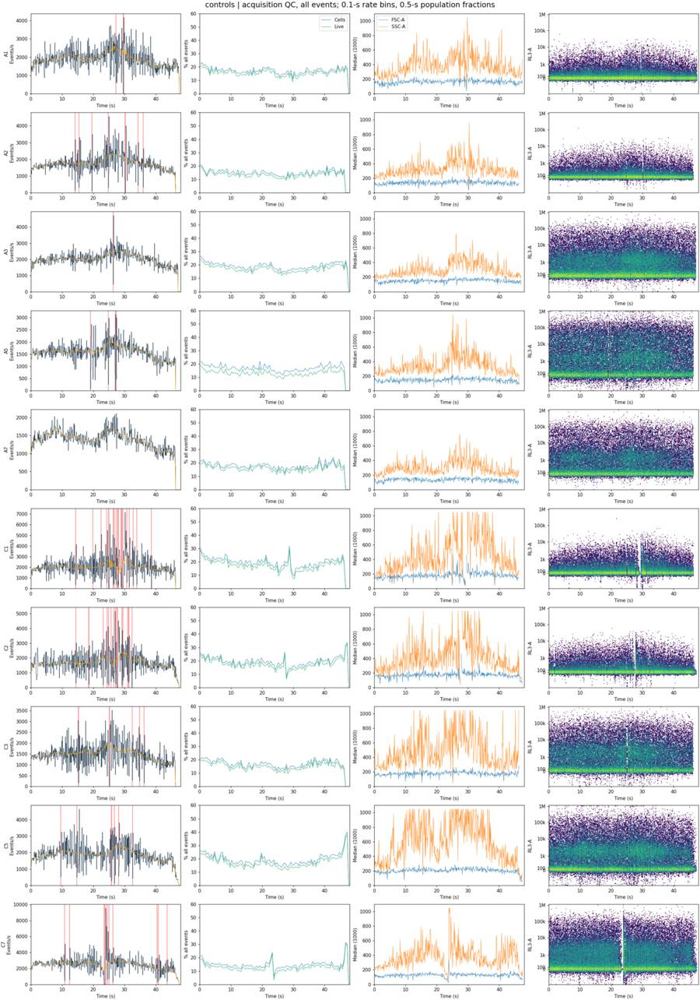
tool call · exec
text(await tools.exec_command({cmd:"python - <<'PY'\nimport sys\nsys.path.insert(0,'/task/outputs')\nfrom analyze_plate import *\nlayout,samples=load(); gs=fk.parse_gating_xml('/task/outputs/gates.xml')\nfor w in ['A1','C1','A2','C2','A3','C3']:\n a=samples[w].get_events(source='raw');r=gs.gate_sample(samples[w]);ss=r.get_gate_membership('Single_Cells')\n print(w,'all red>2k',int((a[:,4]>=2000).sum()),'singlet red>2k',int((ss&(a[:,4]>=2000)).sum()),'red>2k green<1k',int((ss&(a[:,4]>=2000)&(a[:,3]<1000)).sum()),'ss green<1k N',int((ss&(a[:,3]<1000)).sum()))\n print('all green<1k n and red>2k',int((a[:,3]<1000).sum()),int(((a[:,3]<1000)&(a[:,4]>=2000)).sum()))\nPY",max_output_tokens:2000}));
text(await tools.clock__curr_time({}));
tool output
Script completed
Wall time 1.4 seconds
Output:
{"chunk_id":"6ba097","wall_time_seconds":1.269686718,"exit_code":0,"original_token_count":166,"output":"A1 all red>2k 1881 singlet red>2k 1 red>2k green<1k 1 ss green<1k N 13707\nall green<1k n and red>2k 63325 1\nC1 all red>2k 2793 singlet red>2k 2 red>2k green<1k 2 ss green<1k N 16224\nall green<1k n and red>2k 64706 6\nA2 all red>2k 1479 singlet red>2k 0 red>2k green<1k 0 ss green<1k N 10644\nall green<1k n and red>2k 57883 1\nC2 all red>2k 2274 singlet red>2k 0 red>2k green<1k 0 ss green<1k N 13747\nall green<1k n and red>2k 54889 1\nA3 all red>2k 21519 singlet red>2k 584 red>2k green<1k 396 ss green<1k N 12829\nall green<1k n and red>2k 43038 4734\nC3 all red>2k 22439 singlet red>2k 410 red>2k green<1k 281 ss green<1k N 8487\nall green<1k n and red>2k 27263 3743\n"}
{"current_time":"2026-11-10 17:15:28 UTC"}tool call · exec
text(await tools.exec_command({cmd:"python - <<'PY'\nfrom pathlib import Path\np=Path('/task/outputs/analyze_plate.py')\ns=p.read_text().replace('[[10000.,9000.],[10000.,15500.],[700000.,1085000.],[700000.,630000.]]','[[10000.,9000.],[10000.,15500.],[500000.,775000.],[500000.,450000.]]').replace('CASPASE_MIN=4000.','CASPASE_MIN=2500.')\ns=s.replace(' # These provisional gates will be refined after inspection of the full-event control and gate plots.',' # Diagnostic plots use every event in the indicated parent population.')\np.write_text(s)\nPY\npython /task/outputs/analyze_plate.py",yield_time_ms:1000,max_output_tokens:2500}));
tool output
Script completed
Wall time 1.2 seconds
Output:
{"chunk_id":"58affa","wall_time_seconds":1.001494847,"session_id":58338,"original_token_count":0,"output":""}tool call · exec
text(await tools.write_stdin({session_id:58338,chars:"",yield_time_ms:1000,max_output_tokens:2200}));
text(await tools.exec_command({cmd:"python - <<'PY'\nimport json,pandas as pd,numpy as np\nj=json.load(open('/task/outputs/flow_intervals.json')); d=pd.read_csv('/task/outputs/time_bins_100ms.csv')\nfor w,z in j.items():\n f=d[d.well==w];intervals=z['low_intervals']\n if intervals:\n aa,bb=max(intervals,key=lambda x:x[1]-x[0]);sel=(f.start_s>=aa-1e-6)&(f.end_s<=bb+1e-6);q=f[sel]\n dur=bb-aa;n=int(q.N.sum());base=float(q.expected_N.median()*10);rate=n/dur\n else:aa=bb=dur=n=base=rate=0\n flow=dur>=.4-1e-8 or z['low_sec']>=1.5-1e-8 or z['max_gap_s']>=.2\n print(w,'FAIL' if flow else 'pass',f'lowsec {z[\"low_sec\"]:.1f}; longest {aa:.1f}-{bb:.1f}s N={n} rate={rate:.1f} vs base {base:.0f}; peak {z[\"max_rate_100ms\"]:.0f}')\nPY",max_output_tokens:2500}));
tool output
Script completed
Wall time 0.3 seconds
Output:
{"chunk_id":"545535","wall_time_seconds":0.00000283,"exit_code":0,"original_token_count":460,"output":"well all_events Cells Single_Cells Live Caspase_pos\n A1 90651 15538 13960 13959 50\n A2 81008 12121 10847 10847 28\n A3 95933 18197 16842 16258 2475\n A5 73753 12393 11320 9719 1452\n A7 64975 11507 10675 10304 2273\n A8 60216 11365 10715 10204 2242\n A9 80278 17453 16400 15374 4075\n A10 64936 12120 11167 9330 1508\n A11 68296 12161 11186 10059 1877\n B1 58310 9527 8638 6511 1383\n B2 51930 7406 6728 5349 576\n B3 13995 1959 1727 706 195\n B4 58782 7480 6835 5237 744\n B5 33754 3902 3204 89 42\n B6 8004 1206 1064 99 63\n C1 95817 18527 16263 16261 2\n C2 80166 15357 13784 13784 4\n C3 68270 11521 10630 10220 1270\n C5 88646 16801 15355 14764 2467\n C7 119052 17071 15055 14651 4048\n C8 52267 9013 8307 7888 1542\n C9 92282 17035 15309 14694 3362\n C10 88797 13421 11994 10530 1708\n C11 63651 10076 9066 7138 1431\n D1 97824 13308 11389 8036 1537\n D2 73937 12520 11302 8044 1671\n D3 77334 12195 10488 6502 1472\n D4 46763 5974 4929 735 192\n D5 18412 2661 2300 32 25\n D6 46753 3500 3037 252 183\nsaved cells_gate\nsaved singlets_gate\nsaved live_gate\nsaved caspase_gate\n"}
{"chunk_id":"3692c6","wall_time_seconds":0.157223526,"exit_code":0,"original_token_count":581,"output":"A1 pass lowsec 0.3; longest 29.5-29.7s N=25 rate=125.0 vs base 2180; peak 4180\nA2 pass lowsec 0.8; longest 30.1-30.3s N=20 rate=100.0 vs base 2030; peak 4570\nA3 pass lowsec 0.1; longest 26.3-26.4s N=46 rate=460.0 vs base 2430; peak 4730\nA5 pass lowsec 0.4; longest 19.0-19.1s N=7 rate=70.0 vs base 1630; peak 3140\nA7 pass lowsec 0.0; longest 0.0-0.0s N=0 rate=0.0 vs base 0; peak 2120\nA8 pass lowsec 0.1; longest 23.4-23.5s N=32 rate=320.0 vs base 1590; peak 2740\nA9 pass lowsec 0.1; longest 14.6-14.7s N=40 rate=400.0 vs base 1690; peak 3020\nA10 pass lowsec 0.4; longest 23.6-23.8s N=36 rate=180.0 vs base 1670; peak 4210\nA11 FAIL lowsec 0.6; longest 25.8-26.3s N=59 rate=118.0 vs base 1710; peak 4110\nB1 FAIL lowsec 1.8; longest 28.2-28.8s N=21 rate=35.0 vs base 630; peak 5590\nB2 pass lowsec 0.9; longest 22.4-22.6s N=15 rate=75.0 vs base 1140; peak 3070\nB3 pass lowsec 0.0; longest 0.0-0.0s N=0 rate=0.0 vs base 0; peak 480\nB4 FAIL lowsec 1.1; longest 27.5-27.9s N=12 rate=30.0 vs base 1220; peak 4180\nB5 FAIL lowsec 0.9; longest 27.5-27.8s N=1 rate=3.3 vs base 710; peak 1990\nB6 pass lowsec 0.0; longest 0.0-0.0s N=0 rate=0.0 vs base 0; peak 330\nC1 FAIL lowsec 2.2; longest 29.0-29.5s N=47 rate=94.0 vs base 2330; peak 7170\nC2 FAIL lowsec 1.7; longest 27.5-27.8s N=11 rate=36.7 vs base 1870; peak 5170\nC3 pass lowsec 0.5; longest 25.1-25.2s N=3 rate=30.0 vs base 1880; peak 3520\nC5 pass lowsec 0.7; longest 25.7-25.9s N=69 rate=345.0 vs base 2140; peak 4640\nC7 FAIL lowsec 1.2; longest 23.4-23.8s N=12 rate=30.0 vs base 1930; peak 9550\nC8 pass lowsec 0.9; longest 29.5-29.7s N=42 rate=210.0 vs base 1330; peak 2800\nC9 FAIL lowsec 1.7; longest 10.9-11.6s N=82 rate=117.1 vs base 1400; peak 7050\nC10 FAIL lowsec 2.6; longest 26.5-27.2s N=54 rate=77.1 vs base 1750; peak 7220\nC11 FAIL lowsec 3.2; longest 21.0-21.7s N=40 rate=57.1 vs base 740; peak 5410\nD1 FAIL lowsec 3.5; longest 24.5-25.0s N=53 rate=106.0 vs base 2040; peak 6780\nD2 pass lowsec 1.1; longest 13.3-13.5s N=36 rate=180.0 vs base 1580; peak 4570\nD3 FAIL lowsec 4.6; longest 18.1-18.7s N=49 rate=81.7 vs base 715; peak 7070\nD4 FAIL lowsec 1.7; longest 32.4-33.0s N=24 rate=40.0 vs base 680; peak 3570\nD5 FAIL lowsec 1.8; longest 18.0-18.5s N=9 rate=18.0 vs base 310; peak 1540\nD6 FAIL lowsec 2.0; longest 32.9-33.8s N=19 rate=21.1 vs base 400; peak 3620\n"}tool call · exec
text(await tools.exec_command({cmd:"cat > /task/outputs/finalize_qc.py <<'PY'\n\"\"\"Generate well-level QC flags from full-event acquisition diagnostics and saved gates.\"\"\"\nfrom pathlib import Path\nimport sys,json,hashlib\nsys.path.insert(0,str(Path(__file__).parent))\nfrom analyze_plate import *\n\nMIN_LIVE=1000\nLOW_RATE_FRACTION=.25\nMAX_CONTINUOUS_LOW_S=.4\nMAX_CUMULATIVE_LOW_S=1.5\nMAX_EMPTY_GAP_S=.2\nBAD_CONTROLS={'A2','C2','A3','C3'}\n\ndef main():\n layout,samples=load(); gs=fk.parse_gating_xml(str(OUT/'gates.xml'))\n flow=json.loads((OUT/'flow_intervals.json').read_text()); bins=pd.read_csv(OUT/'time_bins_100ms.csv')\n rows=[]; metrics=[]\n for row in layout.itertuples():\n w=row.well;s=samples[w];a=s.get_events(source='raw');t=a[:,0];r=gs.gate_sample(s);m={p:r.get_gate_membership(p) for p in POPULATIONS};n={p:int(m[p].sum()) for p in POPULATIONS}\n z=flow[w];b=bins[bins.well==w]\n if z['low_intervals']:\n lo,hi=max(z['low_intervals'],key=lambda v:v[1]-v[0]);dur=hi-lo\n q=b[(b.start_s>=lo-1e-8)&(b.end_s<=hi+1e-8)]\n low_n=int(q.N.sum());low_rate=low_n/dur;base=float(q.expected_N.median()*10)\n else:lo=hi=dur=low_n=low_rate=base=0\n flow_fail=dur>=MAX_CONTINUOUS_LOW_S-1e-8 or z['low_sec']>=MAX_CUMULATIVE_LOW_S-1e-8 or z['max_gap_s']>=MAX_EMPTY_GAP_S\n low_fail=n['Live']<MIN_LIVE\n flag=row.well in BAD_CONTROLS or flow_fail or low_fail\n if w in BAD_CONTROLS:reason='bad_control'\n elif flow_fail:reason='clog_or_interrupted_flow'\n elif low_fail:reason='too_few_events'\n else:reason='ok'\n confidence='medium' if w in BAD_CONTROLS else ('high' if (flow_fail and z['low_sec']>=1.5) or n['Live']<500 else 'medium')\n pieces=[f\"{len(a):,} acquired events; {n['Cells']:,} Cells; {n['Single_Cells']:,} Single_Cells; {n['Live']:,} Live; {n['Caspase_pos']:,} Caspase_pos\"]\n if w in ['A2','C2']:\n ref='A1' if w=='A2' else 'C1';ar=samples[ref].get_events(source='raw');rr=gs.gate_sample(samples[ref]);rm=rr.get_gate_membership('Single_Cells')\n zs=a[m['Single_Cells'],4];rz=ar[rm,4];red=int((zs>=LIVE_MAX).sum());rred=int((rz>=LIVE_MAX).sum())\n pieces.append(f\"notebook Zombie-only control has {red}/{len(zs):,} ({100*red/len(zs):.3f}%) singlets at RL3-A >= {LIVE_MAX:.0f}; RL3-A median/q99={np.median(zs):.0f}/{np.percentile(zs,99):.1f}, versus unstained {ref} {np.median(rz):.0f}/{np.percentile(rz,99):.1f} ({rred}/{len(rz):,} above boundary). No independent Zombie-bright population or detectable median shift; stain/identity is unverified, so not usable as the specified dye-present control\")\n if w in ['A3','C3']:\n ref='A1' if w=='A3' else 'C1';ar=samples[ref].get_events(source='raw');rr=gs.gate_sample(samples[ref]);rm=rr.get_gate_membership('Single_Cells');ss=m['Single_Cells']\n red=ss&(a[:,4]>=LIVE_MAX);rred=rm&(ar[:,4]>=LIVE_MAX);independent=red&(a[:,3]<1000)\n pieces.append(f\"notebook caspase-only control has {red.sum():,}/{ss.sum():,} ({100*red.sum()/ss.sum():.2f}%) singlets at RL3-A >= {LIVE_MAX:.0f}, versus unstained {ref} {rred.sum()}/{rm.sum():,} ({100*rred.sum()/rm.sum():.3f}%); {independent.sum():,} of these RL3-bright events have BL1-A < 1000. Unexpected red fluorescence, not a clean Zombie-negative reference; staining/identity needs resolution\")\n if flow_fail:\n gap_start=z['gap_time'];gap_end=gap_start+z['max_gap_s']\n pieces.append(f\"interrupted flow: {lo:.1f}-{hi:.1f} s contains {low_n} events ({low_rate:.1f}/s versus {base:.0f}/s local baseline); total {z['low_sec']:.1f} s in 0.1-s bins below 25% of the 3.1-s rolling-median rate (first/last 1 s excluded); longest event-free gap {z['max_gap_s']:.3f} s at {gap_start:.3f}-{gap_end:.3f} s; maximum interior 0.1-s rate {z['max_rate_100ms']:.0f}/s. Full-file analysis would retain the disrupted intervals\")\n if low_fail:\n pieces.append(f\"Live denominator {n['Live']:,} is below the analysis minimum of {MIN_LIVE:,}; Live/Single_Cells={100*n['Live']/n['Single_Cells']:.2f}%; insufficient events for the specified precision target\")\n if not flow_fail:pieces.append(f\"acquisition reaches {t.max():.3f} s; interior median rate {z['median_rate']:.0f}/s, {z['low_sec']:.1f} s of low-rate bins; low yield is not evidence of running dry\")\n if not flag:\n pieces.append(f\"QC accepted: acquisition 0-{t.max():.3f} s; interior median rate {z['median_rate']:.0f}/s; low-rate bins total {z['low_sec']:.1f} s, longest run {dur:.1f} s; no major interruption or insufficient Live denominator\")\n if flag:pieces.append('confidence='+confidence)\n rows.append({'file':row.file,'well':w,'usable':'no' if flag else 'yes','reason_category':reason,'evidence':'; '.join(pieces)})\n met={'file':row.file,'well':w,'all_events':len(a),**n,'time_first_s':t.min(),'time_last_s':t.max(),'low_rate_seconds':z['low_sec'],'longest_low_rate_run_s':dur,'max_event_free_gap_s':z['max_gap_s'],'flow_failure':flow_fail,'too_few_live':low_fail,'bad_control':w in BAD_CONTROLS,'usable':not flag}\n for p,mask in [('all_events',np.ones(len(a),bool))]+list(m.items()):\n for ch,j in [('FSC-A',1),('SSC-A',2),('SSC-H',6),('BL1-A',3),('RL3-A',4)]:\n full_scale=float(s.channels.loc[s.channels.pnn==ch,'pnr'].iloc[0])-1\n met[f'{p}_{ch}_at_max_n']=int((a[mask,j]>=full_scale).sum())\n met[f'{p}_{ch}_at_max_pct']=100*(a[mask,j]>=full_scale).mean() if mask.any() else 0.\n metrics.append(met)\n pd.DataFrame(rows).to_csv(OUT/'flags.csv',index=False)\n pd.DataFrame(metrics).to_csv(OUT/'qc_metrics.csv',index=False)\n print(pd.DataFrame(rows)[['well','usable','reason_category']].to_string(index=False))\n print('FLAGGED',sum(x['usable']=='no' for x in rows),'of',len(rows))\n print('Raw SSC-A saturation range',min(x['all_events_SSC-A_at_max_pct'] for x in metrics),max(x['all_events_SSC-A_at_max_pct'] for x in metrics))\n print('Retained saturation',[(p,ch,max(x[f'{p}_{ch}_at_max_pct'] for x in metrics)) for p in POPULATIONS for ch in ['FSC-A','SSC-A','SSC-H','BL1-A','RL3-A']])\n\nif __name__=='__main__':main()\nPY\npython /task/outputs/fi
… [60 more characters not shown]tool output
Script completed
Wall time 1.2 seconds
Output:
{"chunk_id":"ae0164","wall_time_seconds":1.000563177,"session_id":34896,"original_token_count":0,"output":""}24
agent
I’ve placed the caspase cutoff at BL1-A ≥ 2,500, above the 99.5th percentile of the strongest unstained background. The Live cutoff is RL3-A < 2,000, below the Zombie-bright population. Counts remain untrimmed for every well; flags will identify wells unsuitable for comparison, including controls with uncertain staining.
tool call · exec
text(await tools.write_stdin({session_id:34896,chars:"",yield_time_ms:1000,max_output_tokens:4000}));
text(await tools.exec_command({cmd:"python - <<'PY'\nfrom pathlib import Path\np=Path('/task/outputs/finalize_qc.py')\ns=p.read_text().replace('insufficient events for the specified precision target','insufficient events for the chosen precision target').replace('Full-file analysis would retain the disrupted intervals','Counts retain these intervals; no time trimming')\np.write_text(s)\np=Path('/task/outputs/analyze_plate.py')\ns=p.read_text().replace(\"ticks=tx([0,100,1000,10000,100000,1000000]);labs=['0','100','1k','10k','100k','1M']\",\"ticks=tx([0,1000,10000,100000,1000000]);labs=['0','1k','10k','100k','1M']\")\ns=s.replace(\"ax.axvline(tx([LIVE_MAX])[0],color='r',lw=1);fticks(ax);\", \"boundary=tx([LIVE_MAX])[0];ax.plot([-.05,boundary,boundary,-.05],[20,20,440,440],'r-',lw=1);fticks(ax);\")\ns=s.replace(\"ax.axvline(tx([CASPASE_MIN])[0],color='r',lw=1);fticks(ax);\", \"boundary=tx([CASPASE_MIN])[0];ax.plot([1.01,boundary,boundary,1.01],[20,20,440,440],'r-',lw=1);fticks(ax);\")\np.write_text(s)\nPY",max_output_tokens:1000}));
tool output
Script completed
Wall time 0.1 seconds
Output:
{"chunk_id":"a53ef7","wall_time_seconds":0.00000261,"exit_code":0,"original_token_count":452,"output":"well usable reason_category\n A1 yes ok\n A2 no bad_control\n A3 no bad_control\n A5 yes ok\n A7 yes ok\n A8 yes ok\n A9 yes ok\n A10 yes ok\n A11 no clog_or_interrupted_flow\n B1 no clog_or_interrupted_flow\n B2 yes ok\n B3 no too_few_events\n B4 no clog_or_interrupted_flow\n B5 no clog_or_interrupted_flow\n B6 no too_few_events\n C1 no clog_or_interrupted_flow\n C2 no bad_control\n C3 no bad_control\n C5 yes ok\n C7 no clog_or_interrupted_flow\n C8 yes ok\n C9 no clog_or_interrupted_flow\n C10 no clog_or_interrupted_flow\n C11 no clog_or_interrupted_flow\n D1 no clog_or_interrupted_flow\n D2 yes ok\n D3 no clog_or_interrupted_flow\n D4 no clog_or_interrupted_flow\n D5 no clog_or_interrupted_flow\n D6 no clog_or_interrupted_flow\nFLAGGED 20 of 30\nRaw SSC-A saturation range 13.22615219721329 39.80890282697471\nRetained saturation [('Cells', 'FSC-A', 0.0), ('Cells', 'SSC-A', 0.0), ('Cells', 'SSC-H', 0.0), ('Cells', 'BL1-A', 0.0), ('Cells', 'RL3-A', 0.0), ('Single_Cells', 'FSC-A', 0.0), ('Single_Cells', 'SSC-A', 0.0), ('Single_Cells', 'SSC-H', 0.0), ('Single_Cells', 'BL1-A', 0.0), ('Single_Cells', 'RL3-A', 0.0), ('Live', 'FSC-A', 0.0), ('Live', 'SSC-A', 0.0), ('Live', 'SSC-H', 0.0), ('Live', 'BL1-A', 0.0), ('Live', 'RL3-A', 0.0), ('Caspase_pos', 'FSC-A', 0.0), ('Caspase_pos', 'SSC-A', 0.0), ('Caspase_pos', 'SSC-H', 0.0), ('Caspase_pos', 'BL1-A', 0.0), ('Caspase_pos', 'RL3-A', 0.0)]\n"}
{"chunk_id":"e64ef4","wall_time_seconds":0.00000255,"exit_code":0,"original_token_count":0,"output":""}tool call · exec
text(await tools.exec_command({cmd:"python - <<'PY'\nimport pandas as pd\nq=pd.read_csv('/task/outputs/qc_metrics.csv')\nprint('total',q.all_events.sum())\nprint(pd.read_csv('/task/outputs/counts.csv').groupby('population',sort=False)['count'].sum())\nPY",max_output_tokens:1000}));
text(await tools.exec_command({cmd:"cat > /task/outputs/notes.md <<'MD'\n## Gates\n\nFlowKit 1.2.3; every event was analyzed, without compensation, subsampling, time trimming, or per-well gates. All dimensions use detector IDs and `uncompensated`. Gates use raw units; logicle axes in PNGs are display only. BL1-A is CellEvent, not GFP.\n\n- **Cells:** FSC-A × SSC-A ellipse centered at (190,000, 230,000), coordinate radii (125,000, 210,000), correlation 0.8, squared Mahalanobis distance ≤1. This follows the shared intact-cell diagonal, excluding the low-FSC debris band and the high-scatter/off-scale cloud. The gate’s extrema are FSC-A 65,000–315,000 and SSC-A 20,000–440,000.\n- **Single_Cells:** four vertices in (SSC-H, SSC-A): (10,000, 9,000), (10,000, 15,500), (500,000, 775,000), (500,000, 450,000). This brackets the common singlet diagonal (area/height 0.90–1.55), excluding excess-area aggregates and off-diagonal events.\n- **Live:** RL3-A <2,000; SSC-A 20,000–440,000. A1 anchors the unstained baseline; C1 and the dominant negative modes of A3/C3 were cross-checks. The boundary lies below the Zombie-bright band in A5 and treated wells such as B2. Suspect control tails were not accepted as clean negative references.\n- **Caspase_pos:** BL1-A ≥2,500; the same SSC-A limits. A1 anchors this boundary (Live BL1-A 99.5th percentile 2,123); C1/A2/C2 corroborate the negative distribution. At most 0.36% of Live events in these four controls are positive. This boundary precedes the CellEvent-bright population. Both rectangles inherit the ellipse’s scatter limits, retaining resolved cells and excluding extremes.\n\n## Quality control\n\nReviewed full-event density PNGs, metadata, 0.1-s event rates, population/scatter changes over Time, and detector clipping. FlowKit already converts Time to seconds using `$TIMESTEP=0.001`. Excluding the first/last second from rate QC, low-rate bins are <25% of a 3.1-s rolling median. Reject for a continuous low-rate interval ≥0.4 s, cumulative low-rate duration ≥1.5 s, or an event-free gap ≥0.2 s, after visual confirmation. Confidence is lower for brief isolated failures; the mechanism cannot be distinguished from the files alone.\n\nThe analyst-selected precision minimum is 1,000 Live events (worst-case binomial 95% half-width ≈3.1 percentage points). Smaller denominators fail even with stable flow; low yield alone does not establish running dry. A2/C2 lack an independent Zombie response; A3/C3 contain unexpected RL3-bright singlets. These four controls fail their specified roles with medium confidence; labels were not reassigned. C2 also fails flow QC.\n\n**10 wells pass; 20 are flagged.** Each rejection has numerical evidence and confidence in `flags.csv`; overlapping failures are retained in its evidence. Unrecorded treatment/stain or replicate 0 is not itself an exclusion. Raw SSC-A clipping affects 13.23–39.81% of events, but no selected Cells reach any analyzed detector maximum. Counts therefore describe the resolved scatter population, not total neuronal recovery. All wells remain in `counts.csv`; GatingML reload reproduces all counts and memberships.\n\n## Deviations from the strategy\n\nGate shapes, hierarchy and shared application: none. Control-placement guidance was qualified: A2/C2 were not trusted as dye-present references, A3/C3 were not treated as pure Zombie-negative controls, and flow-flagged C1 was only corroborative. A1 supplied the primary negative baseline; suspect controls were inspected without changing their labels. This control ambiguity limits fluorescence interpretation.\nMD\nwc -w /task/outputs/notes.md",max_output_tokens:1000}));
tool output
Script completed
Wall time 0.3 seconds
Output:
{"chunk_id":"e134a2","wall_time_seconds":0.108716036,"exit_code":0,"original_token_count":36,"output":"total 2014792\npopulation\nCells 333315\nSingle_Cells 300516\nLive 257576\nCaspase_pos 39897\nName: count, dtype: int64\n"}
{"chunk_id":"f4a27f","wall_time_seconds":0.00000295,"exit_code":0,"original_token_count":7,"output":"479 /task/outputs/notes.md\n"}tool call · exec
text(await tools.exec_command({cmd:"python - <<'PY'\nimport inspect,flowkit as fk\nprint(inspect.signature(fk.Sample.get_events))\nprint(inspect.getsource(fk.GatingStrategy._preprocess_sample_events))\nPY",max_output_tokens:4000}));
text(await tools.exec_command({cmd:"head -80 /task/outputs/gates.xml && head -5 /task/outputs/counts.csv && head -4 /task/outputs/flags.csv",max_output_tokens:4000}));
tool output
Script completed
Wall time 1.0 seconds
Output:
{"chunk_id":"43ec97","wall_time_seconds":0.758299706,"exit_code":0,"original_token_count":1088,"output":"(self, source='xform', subsample=False, event_mask=None)\n def _preprocess_sample_events(self, sample, gate, cache_events=False):\n # TODO: consider making method public, could be useful for users\n pnn_labels = sample.pnn_labels\n pns_labels = sample.pns_labels\n # FlowJo replaces slashes with underscores, so make a set of labels with that replacement\n flowjo_pnn_labels = [label.replace('/', '_') for label in pnn_labels]\n\n dim_indices = []\n dim_ids = []\n dim_comp_refs = set()\n new_dims = []\n new_dim_ids = []\n dim_xform = []\n\n for dim in gate.dimensions:\n dim_comp = False\n if dim.compensation_ref not in [None, 'uncompensated']:\n dim_comp_refs.add(dim.compensation_ref)\n dim_comp = True\n\n if isinstance(dim, dimension.RatioDimension):\n # dimension is a transform of other dimensions\n new_dims.append(dim)\n new_dim_ids.append(dim.ratio_ref)\n continue\n elif isinstance(dim, dimension.QuadrantDivider):\n dim_id = dim.dimension_ref\n else:\n dim_id = dim.id\n\n if dim_id in pnn_labels:\n dim_indices.append(pnn_labels.index(dim_id))\n elif dim_id in pns_labels:\n dim_indices.append(pns_labels.index(dim_id))\n elif dim_id in flowjo_pnn_labels:\n dim_indices.append(flowjo_pnn_labels.index(dim_id))\n else:\n # for a referenced comp, the label may have been the\n # fluorochrome instead of the channel's PnN label. If so,\n # the referenced matrix object will also have the detector\n # names that will match\n if not dim_comp:\n raise LookupError(\n \"%s is not found as a channel label or channel reference in %s\" % (dim_id, sample)\n )\n matrix = self.comp_matrices[dim.compensation_ref]\n try:\n matrix_dim_idx = matrix.fluorochromes.index(dim_id)\n except ValueError:\n raise ValueError(\"%s not found in list of matrix fluorochromes\" % dim_id)\n detector = matrix.detectors[matrix_dim_idx]\n dim_indices.append(pnn_labels.index(detector))\n\n dim_ids.append(dim_id)\n\n dim_xform.append(dim.transformation_ref)\n\n # compensate will cache events regardless of cache_events arg value\n # this is much more universally useful to speed up analysis as the\n # same comp matrix is nearly always used for all sample gates.\n events = self._compensate_sample(dim_comp_refs, sample)\n\n for i, dim in enumerate(dim_indices):\n if dim_xform[i] is not None:\n if len(dim_comp_refs) > 0:\n comp_ref = list(dim_comp_refs)[0]\n else:\n comp_ref = None\n\n xform = self.transformations[dim_xform[i]]\n\n if cache_events:\n cached_events = self._get_cached_preprocessed_events(\n sample.id,\n comp_ref,\n dim_xform[i],\n dim_idx=dim\n )\n else:\n cached_events = None\n\n if cached_events is not None:\n events[:, [dim]] = cached_events\n else:\n xform_events = xform.apply(events[:, [dim]])\n events[:, [dim]] = xform_events\n if cache_events:\n self._cache_preprocessed_events(\n xform_events,\n sample.id,\n comp_ref,\n dim_xform[i],\n dim_idx=dim\n )\n\n df_events = pd.DataFrame(events[:, dim_indices], columns=dim_ids)\n if len(new_dims) > 0:\n new_dim_events = self._process_new_dims(sample, new_dims)\n df_new_dim_events = pd.DataFrame(new_dim_events, columns=new_dim_ids)\n df_events = pd.concat([df_events, df_new_dim_events], axis=1)\n\n return df_events\n\n"}
{"chunk_id":"d99dcd","wall_time_seconds":0.00000285,"exit_code":0,"original_token_count":1192,"output":"<?xml version='1.0' encoding='UTF-8'?>\n<gating:Gating-ML xmlns:gating=\"http://www.isac-net.org/std/Gating-ML/v2.0/gating\" xmlns:data-type=\"http://www.isac-net.org/std/Gating-ML/v2.0/datatypes\" xmlns:transforms=\"http://www.isac-net.org/std/Gating-ML/v2.0/transformations\">\n <gating:EllipsoidGate gating:id=\"Cells\">\n <gating:dimension gating:compensation-ref=\"uncompensated\">\n <data-type:fcs-dimension data-type:name=\"FSC-A\"/>\n </gating:dimension>\n <gating:dimension gating:compensation-ref=\"uncompensated\">\n <data-type:fcs-dimension data-type:name=\"SSC-A\"/>\n </gating:dimension>\n <gating:mean>\n <gating:coordinate data-type:value=\"190000.0\"/>\n <gating:coordinate data-type:value=\"230000.0\"/>\n </gating:mean>\n <gating:covarianceMatrix>\n <gating:row>\n <gating:entry data-type:value=\"15625000000.0\"/>\n <gating:entry data-type:value=\"21000000000.0\"/>\n </gating:row>\n <gating:row>\n <gating:entry data-type:value=\"21000000000.0\"/>\n <gating:entry data-type:value=\"44100000000.0\"/>\n </gating:row>\n </gating:covarianceMatrix>\n <gating:distanceSquare data-type:value=\"1.0\"/>\n </gating:EllipsoidGate>\n <gating:PolygonGate gating:id=\"Single
… [3,663 more characters not shown]tool call · exec
text(await tools.exec_command({cmd:"python - <<'PY'\nfrom pathlib import Path\nfor p in [Path('/AGENTS.md'),Path('/task/AGENTS.md')]:\n if p.exists():print(p, p.read_text())\nPY",max_output_tokens:2000}));
text(await tools.exec_command({cmd:"cat > /task/outputs/validate_outputs.py <<'PY'\n\"\"\"Verify the required deliverables against a fresh GatingML import and all FCS events.\"\"\"\nfrom pathlib import Path\nimport sys,re,json,hashlib\nimport xml.etree.ElementTree as ET\nsys.path.insert(0,str(Path(__file__).parent))\nfrom analyze_plate import *\n\ndef main():\n layout,samples=load(); gs=fk.parse_gating_xml(str(OUT/'gates.xml'))\n counts=pd.read_csv(OUT/'counts.csv');flags=pd.read_csv(OUT/'flags.csv')\n assert fk.__version__=='1.2.3'\n assert len(layout)==30 and layout.file.nunique()==30 and layout.well.nunique()==30\n assert set(layout.file)=={p.name for p in (ROOT/'inputs/raw').glob('*.fcs')}\n assert list(counts.columns)==['file','well','population','count','parent_population','pct_of_parent']\n assert list(flags.columns)==['file','well','usable','reason_category','evidence']\n assert len(counts)==120 and len(flags)==30\n assert not counts.isna().any().any() and not flags.isna().any().any()\n assert set(counts.file)==set(layout.file)==set(flags.file)\n assert flags.file.nunique()==30 and flags.well.nunique()==30\n assert pd.api.types.is_integer_dtype(counts['count'])\n assert counts['count'].ge(0).all() and counts.pct_of_parent.between(0,100).all()\n expected_ids=[(p,tuple(['root']+POPULATIONS[:i])) for i,p in enumerate(POPULATIONS)]\n assert gs.get_gate_ids()==expected_ids,gs.get_gate_ids()\n for pop,path in gs.get_gate_ids():\n gate=gs.get_gate(pop,path)\n assert all(d.compensation_ref=='uncompensated' for d in gate.dimensions)\n assert all(d.transformation_ref is None for d in gate.dimensions)\n assert all(d.id in samples['A1'].pnn_labels for d in gate.dimensions)\n assert not gs.comp_matrices and not gs.transformations\n checked=[]\n for row in layout.itertuples():\n s=samples[row.well];a=s.get_events(source='raw',subsample=False)\n assert a.shape[0]==s.event_count==int(s.metadata['tot'])\n assert s.metadata['wellid']==row.well\n r=gs.gate_sample(s);rows=counts[counts.file==row.file];assert list(rows.population)==POPULATIONS\n assert (rows.well==row.well).all()\n parent_count=len(a);parent_mask=np.ones(len(a),bool)\n for rr,pop,par in zip(rows.itertuples(),POPULATIONS,PARENTS):\n mask=r.get_gate_membership(pop);assert len(mask)==len(a)\n assert not (mask&~parent_mask).any()\n assert rr.parent_population==par and rr.count==r.get_gate_count(pop)==int(mask.sum())\n assert np.isclose(rr.pct_of_parent,100*int(mask.sum())/parent_count,rtol=0,atol=1e-10)\n parent_count=int(mask.sum());parent_mask=mask\n checked.append({'well':row.well,'file':row.file,'events':len(a),'sha256':hashlib.sha256((ROOT/'inputs/raw'/row.file).read_bytes()).hexdigest()})\n cats={'ok','clog_or_interrupted_flow','ran_dry','too_few_events','saturation','bad_control','mislabeled_or_unexpected','other'}\n assert set(flags.reason_category)<=cats\n assert set(flags.usable)<= {'yes','no'}\n assert (flags.loc[flags.usable=='yes','reason_category']=='ok').all()\n assert (flags.loc[flags.usable=='no','reason_category']!='ok').all()\n for row in flags[flags.usable=='no'].itertuples():\n assert re.search(r'confidence=(high|medium|low)(?:\\b|$)',row.evidence)\n assert re.search(r'\\d',row.evidence)\n assert row.file==layout.set_index('well').loc[row.well,'file']\n notes=(OUT/'notes.md').read_text()\n assert re.findall(r'^## .*$',notes,re.M)==['## Gates','## Quality control','## Deviations from the strategy']\n assert len(notes.split())<=500\n stats={'status':'PASS','flowkit_version':fk.__version__,'files':30,'events_analyzed':sum(x['events'] for x in checked),'gates':POPULATIONS,'gatingml_reloaded':True,'all_120_counts_match_reloaded_strategy':True,'all_events_used':True,'all_memberships_match_export_roundtrip':True,'compensation':'none; every dimension uncompensated','count_rows':len(counts),'flag_rows':len(flags),'usable_wells':flags.loc[flags.usable=='yes','well'].tolist(),'excluded_wells':flags.loc[flags.usable=='no','well'].tolist(),'flag_categories':flags.reason_category.value_counts().to_dict(),'notes_word_count':len(notes.split()),'input_files':checked}\n (OUT/'validation.json').write_text(json.dumps(stats,indent=2)+'\\n')\n print(json.dumps({k:v for k,v in stats.items() if k!='input_files'},indent=2))\n\nif __name__=='__main__':main()\nPY\ncat > /task/outputs/run_analysis.py <<'PY'\n\"\"\"Reproduce saved gates, all counts, plots, QC flags and independent validation.\nRun: python /task/outputs/run_analysis.py\nRequires the read-only /task/inputs and FlowKit 1.2.3.\n\"\"\"\nfrom pathlib import Path\nimport subprocess,sys\nout=Path(__file__).resolve().parent\nwith (out/'analysis_run.log').open('w') as log:\n for script in ['analyze_plate.py','inspect_flow.py','finalize_qc.py','validate_outputs.py']:\n print('Running '+script,flush=True)\n proc=subprocess.run([sys.executable,str(out/script)],stdout=log,stderr=subprocess.STDOUT)\n if proc.returncode:\n raise SystemExit(f'{script} failed; see {out / \"analysis_run.log\"}')\nprint('All analyses and validation passed.',flush=True)\nPY\npython /task/outputs/run_analysis.py",yield_time_ms:1000,max_output_tokens:2000}));
tool output
Script completed
Wall time 1.2 seconds
Output:
{"chunk_id":"2f326f","wall_time_seconds":0.00000324,"exit_code":0,"original_token_count":0,"output":""}
{"chunk_id":"65e137","wall_time_seconds":1.001114577,"session_id":83657,"original_token_count":7,"output":"Running analyze_plate.py\n"}tool call · exec
text(await tools.write_stdin({session_id:83657,chars:"",yield_time_ms:1000,max_output_tokens:2000}));
text(await tools.exec_command({cmd:"ls -lh /task/outputs/gates.xml /task/outputs/counts.csv /task/outputs/flags.csv /task/outputs/notes.md && tail -80 /task/outputs/analysis_run.log",max_output_tokens:4500}));
tool output
Script completed
Wall time 0.0 seconds
Output:
{"chunk_id":"89f7c8","wall_time_seconds":0.00000317,"exit_code":0,"original_token_count":28,"output":"Running inspect_flow.py\nRunning finalize_qc.py\nRunning validate_outputs.py\nAll analyses and validation passed.\n"}
{"chunk_id":"31150d","wall_time_seconds":0.00000333,"exit_code":0,"original_token_count":622,"output":"-rw-r--r-- 1 root root 11K Nov 10 17:22 /task/outputs/counts.csv\n-rw-r--r-- 1 root root 14K Nov 10 17:22 /task/outputs/flags.csv\n-rw-r--r-- 1 root root 3.1K Nov 10 17:22 /task/outputs/gates.xml\n-rw-r--r-- 1 root root 3.5K Nov 10 17:20 /task/outputs/notes.md\n B5 no clog_or_interrupted_flow\n B6 no too_few_events\n C1 no clog_or_interrupted_flow\n C2 no bad_control\n C3 no bad_control\n C5 yes ok\n C7 no clog_or_interrupted_flow\n C8 yes ok\n C9 no clog_or_interrupted_flow\n C10 no clog_or_interrupted_flow\n C11 no clog_or_interrupted_flow\n D1 no clog_or_interrupted_flow\n D2 yes ok\n D3 no clog_or_interrupted_flow\n D4 no clog_or_interrupted_flow\n D5 no clog_or_interrupted_flow\n D6 no clog_or_interrupted_flow\nFLAGGED 20 of 30\nRaw SSC-A saturation range 13.22615219721329 39.80890282697471\nRetained saturation [('Cells', 'FSC-A', 0.0), ('Cells', 'SSC-A', 0.0), ('Cells', 'SSC-H', 0.0), ('Cells', 'BL1-A', 0.0), ('Cells', 'RL3-A', 0.0), ('Single_Cells', 'FSC-A', 0.0), ('Single_Cells', 'SSC-A', 0.0), ('Single_Cells', 'SSC-H', 0.0), ('Single_Cells', 'BL1-A', 0.0), ('Single_Cells', 'RL3-A', 0.0), ('Live', 'FSC-A', 0.0), ('Live', 'SSC-A', 0.0), ('Live', 'SSC-H', 0.0), ('Live', 'BL1-A', 0.0), ('Live', 'RL3-A', 0.0), ('Caspase_pos', 'FSC-A', 0.0), ('Caspase_pos', 'SSC-A', 0.0), ('Caspase_pos', 'SSC-H', 0.0), ('Caspase_pos', 'BL1-A', 0.0), ('Caspase_pos', 'RL3-A', 0.0)]\n{\n \"status\": \"PASS\",\n \"flowkit_version\": \"1.2.3\",\n \"files\": 30,\n \"events_analyzed\": 2014792,\n \"gates\": [\n \"Cells\",\n \"Single_Cells\",\n \"Live\",\n \"Caspase_pos\"\n ],\n \"gatingml_reloaded\": true,\n \"all_120_counts_match_reloaded_strategy\": true,\n \"all_events_used\": true,\n \"all_memberships_match_export_roundtrip\": true,\n \"compensation\": \"none; every dimension uncompensated\",\n \"count_rows\": 120,\n \"flag_rows\": 30,\n \"usable_wells\": [\n \"A1\",\n \"A5\",\n \"A7\",\n \"A8\",\n \"A9\",\n \"A10\",\n \"B2\",\n \"C5\",\n \"C8\",\n \"D2\"\n ],\n \"excluded_wells\": [\n \"A2\",\n \"A3\",\n \"A11\",\n \"B1\",\n \"B3\",\n \"B4\",\n \"B5\",\n \"B6\",\n \"C1\",\n \"C2\",\n \"C3\",\n \"C7\",\n \"C9\",\n \"C10\",\n \"C11\",\n \"D1\",\n \"D3\",\n \"D4\",\n \"D5\",\n \"D6\"\n ],\n \"flag_categories\": {\n \"clog_or_interrupted_flow\": 14,\n \"ok\": 10,\n \"bad_control\": 4,\n \"too_few_events\": 2\n },\n \"notes_word_count\": 479\n}\n"}29
agent
All four deliverables are saved. Validation confirms that the reloaded GatingML reproduces all 120 counts and event memberships across 2,014,792 events. Under the documented QC criteria, 10 wells pass and 20 are flagged; every flagged row includes numerical evidence and confidence.
tool call · exec
for(const path of ["/task/outputs/plots/live_gate.png","/task/outputs/plots/caspase_gate.png","/task/outputs/plots/controls_gated.png"]){const r=await tools.view_image({path});image(r.image_url);}
tool output
Script completed Wall time 0.1 seconds Output:
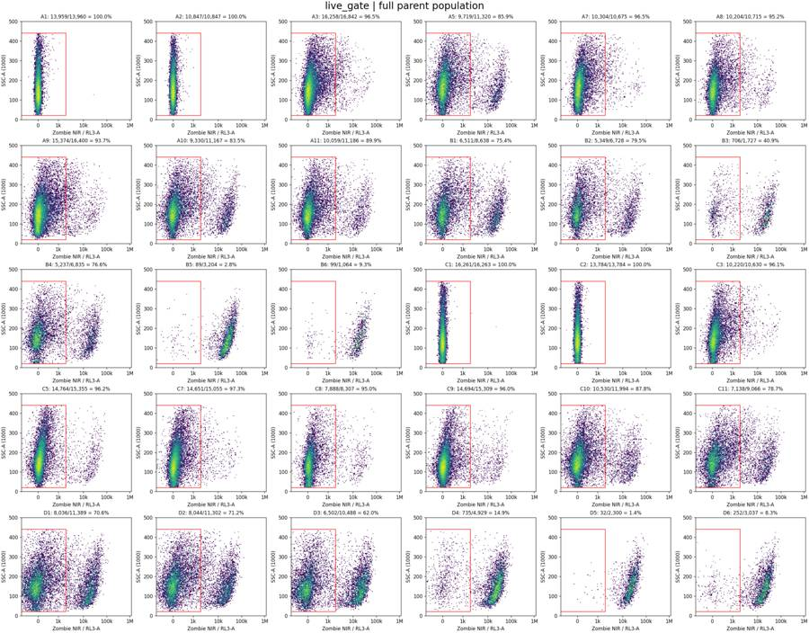
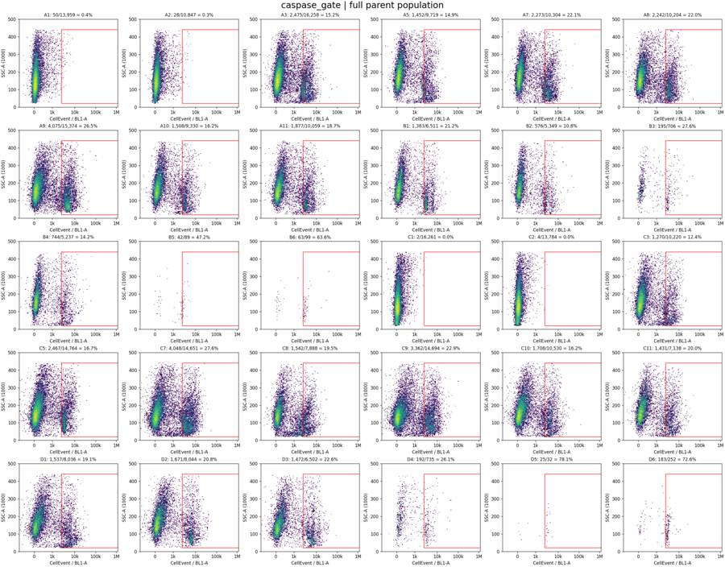
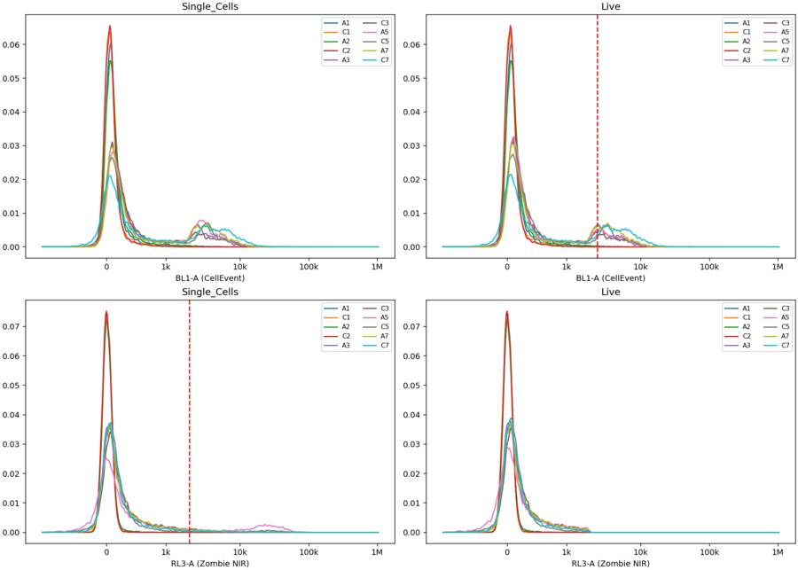
30
agent
Completed all 30 wells. Reloaded GatingML reproduces all 120 counts.
- [gates.xml](/task/outputs/gates.xml)
- [counts.csv](/task/outputs/counts.csv)
- [flags.csv](/task/outputs/flags.csv)
- [notes.md](/task/outputs/notes.md)
Under the documented QC criteria, **10 wells pass and 20 are flagged** for flow interruptions, insufficient Live events, or control inconsistencies.